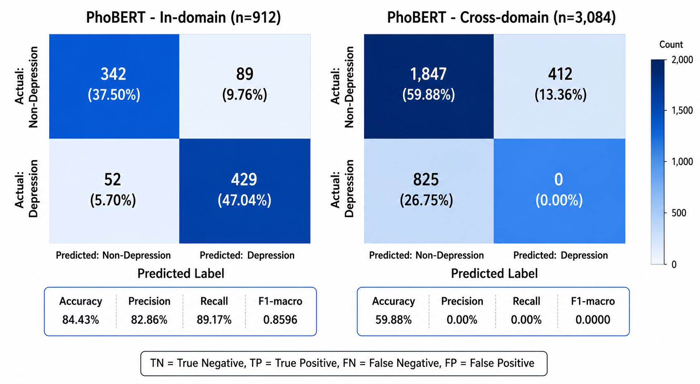
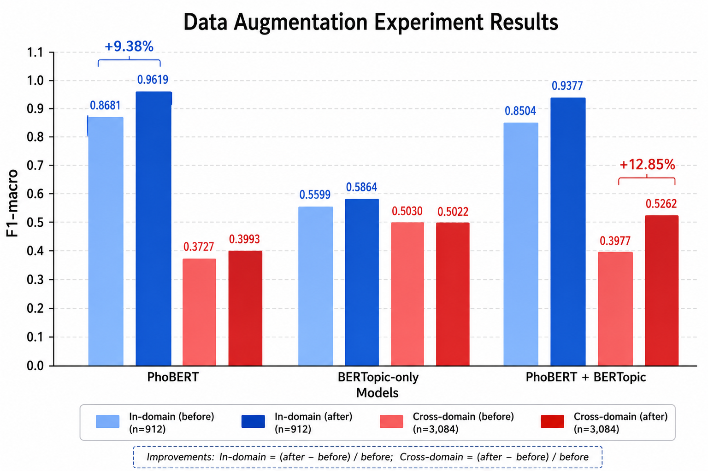

Detection of Depression Signs
in Vietnamese Social Media Text
Using Deep Learning Models
Capstone Project — Department of Computer Science
University of Information Technology, VNU-HCM
Academic Year 2025–2026
Abstract
Depression constitutes one of the most prevalent mental disorders worldwide, affecting approximately 280 million individuals according to the World Health Organization (WHO, 2023). In Vietnam, the prevalence of depressive disorders has risen sharply, particularly among adolescents and young adults—the demographic cohort with the highest social media penetration. Despite the availability of validated screening instruments such as the PHQ-9, the majority of affected individuals do not access mental health services, owing to persistent social stigma, limited mental health literacy, and a nationwide shortage of psychiatric professionals (approximately 200 psychiatrists per 100 million population). Social media platforms, particularly YouTube which commands a vast Vietnamese-language user base, contain large volumes of publicly accessible user-generated comments that reflect the psychological states of their authors. These digital traces present an opportunity for early depression screening through natural language analysis, bypassing the requirement for active help-seeking. This project constructs an end-to-end pipeline spanning data acquisition (125,329 YouTube comments), cleaning, weak-labeling via keyword scoring, blind human annotation through Label Studio across 5 active learning rounds, and the training and comparative evaluation of five deep learning models. Results demonstrate that PhoBERT with majority voting across three seeds achieves an F1-macro of 0.8596 on the in-domain test set (912 samples) and 0.4937 on the cross-domain VSMEC test set (3,084 samples), with a generalization gap of 0.37 F1 (post Round 5 dataset: 6,080 training samples). PhoBERT outperforms TF-IDF + LinearSVC (0.8629/ —), BiLSTM with random embeddings (0.8049/ —), and PhoBERT + BERTopic (0.7868/ 0.4501). Notably, the cross-domain F1 improved substantially from 0.3727 (pre-Round 4) to 0.4937 (Round 5, +0.1210) after five rounds of active learning annotation, demonstrating that diverse human-labeled data significantly improves generalization. The analysis identifies four contributing factors to the generalization gap: label definition divergence, text length distribution mismatch, linguistic register divergence, and class imbalance—indicating that the principal bottleneck lies in training data quality rather than model architecture.
Keywords: depression detection, PhoBERT, deep learning, Vietnamese natural language processing, text classification, social media, BERTopic, weak-labeling, cross-domain evaluation
1. Introduction
1.1. Background and Motivation
Major Depressive Disorder (MDD) is a debilitating psychiatric condition characterized by persistent low mood, anhedonia, and impaired psychosocial functioning. The World Health Organization identifies depression as the single largest contributor to global disability, accounting for 7.5% of all years lived with disability (YLDs), with a lifetime prevalence of approximately 15–18% (Bromet et al., 2011; WHO, 2023). In Vietnam, the Ministry of Health estimated in 2022 that 3–4% of the population—approximately 3–4 million individuals—meet the diagnostic criteria for a depressive disorder. Critically, the 15–29 age bracket, which comprises the most active social media users, exhibits both the highest incidence and the lowest rate of mental health service utilization.
Three structural barriers impede early depression detection in the Vietnamese context. First, pervasive social stigma surrounding mental illness discourages acknowledgment and help-seeking; depressive symptoms are frequently misattributed to character weakness or spiritual deficiency. Second, the mental health workforce is severely constrained—Vietnam operates with roughly 200 specialist psychiatrists for a population approaching 100 million, yielding a ratio of 0.2 per 100,000 that is among the lowest in the Western Pacific region. Third, validated screening instruments such as the PHQ-9 (Kroenke et al., 2001) and BDI-II rely on patient self-report and therefore presuppose both symptom awareness and willingness to disclose—conditions that are frequently absent in individuals with depression, particularly during the prodromal phase.
Social media platforms have emerged as a compelling complementary data source for population-level mental health surveillance. Unlike clinical settings, social media captures ecologically valid linguistic behavior—spontaneous, unprompted, and embedded in naturalistic social contexts. YouTube, with over two billion monthly active users, hosts millions of Vietnamese-language comments in which users routinely disclose emotional distress, personal struggles, and suicidal ideation. Prior work in computational psychiatry has demonstrated that linguistic markers extracted from social media can serve as proxy indicators for depression onset, severity, and treatment response (Coppersmith et al., 2014; Guntuku et al., 2017; Losada et al., 2019; Yates et al., 2017).
However, the existing literature on social media-based depression detection is overwhelmingly concentrated on English and, to a lesser extent, Chinese, Arabic, and Spanish. Vietnamese—a tonal, isolating language spoken by over 90 million people—remains virtually absent from this research landscape. Vietnamese presents three specific challenges for the depression detection task. First, no publicly available benchmark dataset exists for Vietnamese depression classification with human-validated labels; existing Vietnamese corpora (VSMEC, NTC-SCV, UIT-VSFC) target emotion recognition or general sentiment analysis rather than clinical depression markers. Second, Vietnamese is an analytic language with no inflectional morphology, employing diacritics to encode six lexical tones; social media texts frequently omit these diacritics, creating substantial orthographic ambiguity. Third, a wide gap separates formal Vietnamese text—the domain on which pretrained language models such as PhoBERT (Nguyen & Nguyen, 2020) were trained—from the noisy, code-switched, abbreviation-dense register of YouTube comments.
This project addresses these gaps by constructing a complete pipeline for Vietnamese depression sign detection from YouTube comments, encompassing data acquisition, preprocessing, weak-labeling, blind human annotation, model training, and rigorous two-domain evaluation. The contributions comprise the first publicly available dataset of this type for Vietnamese, the first benchmark comparison of deep learning architectures on this task, and an empirical characterization of the generalization gap that remains the central unsolved challenge.

1.2. Project Objectives
1.2.1. Overarching Aim
To develop an automated system capable of detecting linguistic indicators of depression in Vietnamese-language YouTube comments using deep learning models, contributing to early screening support and raising mental health awareness within the Vietnamese-speaking community.
1.2.2. Specific Objectives
- Data acquisition and corpus construction. Crawl over 125,000 Vietnamese YouTube comments via the YouTube Data API v3 using 264 depression-related search keywords spanning five thematic groups (depression and suicidality, loneliness and sadness, stress and burnout, sleep disturbance and overthinking, and psychological help-seeking and healing). Integrate eight publicly available Vietnamese datasets—VSMEC, NTC-SCV, UIT-VSFC, Vietnamese Sentiment Analysis, Vietnamese Sentiment (binary), Vietnamese Comment Sentiment, Vietnamese Toxic Core, and Vietnamese Toxic (machine-translated)—to construct a unified corpus of 316,401 texts with a manifest specifying the designated role of each subset (training, topic modeling, cross-domain testing).
- Weak-labeling pipeline design. Engineer a weighted-keyword lexicon comprising 53 depression-strong terms (weight +5), 116 depression-medium terms (+3), and 166 normal-context terms (−2), grounded in Vietnamese clinical psychology literature and validated through expert consultation. Apply this lexicon to auto-label the entire YouTube dataset, producing a three-tier label distribution (depression_auto, normal_auto, uncertain) with calibrated confidence levels.
- Blind human annotation. Implement a blind review protocol—in which annotators see only the comment text and never the machine-suggested label—for 1,750 samples curated from five review buckets (depression high-confidence, normal high-confidence, uncertain, need-review, boundary). Quantify annotation quality through Cohen’s Kappa and human-machine disagreement rates. Construct a clean gold set of 1,607 samples with independently validated binary labels.
- Model training and comparative evaluation. Train five distinct architectures—TF-IDF + SVM, BiLSTM, PhoBERT, BERTopic-only, and PhoBERT + BERTopic—on the final training set (1,786 samples, post round-3 review merge, stratified). Evaluate each model on two independent test sets: an in-domain test set from the YouTube distribution (383 samples) and a fixed cross-domain test set (VSMEC, 3,084 samples) that is never exposed during training. Report six performance metrics: accuracy, macro-averaged precision, recall, and F1, weighted F1, and depression-class F1.
- Topic modeling for latent structure discovery. Apply BERTopic to the full 316,401-document corpus to discover latent thematic clusters. Identify depression-related topics through keyword overlap analysis, providing qualitative insight into the structure of mental health discourse and supplying auxiliary features for the combined PhoBERT + BERTopic architecture.
- Comprehensive error analysis and characterization of the generalization gap. Quantify the in-domain to cross-domain performance gap for each model. Identify systematic error patterns—characteristic false positives and false negatives—through manual inspection of confusion matrix cells. Diagnose the root causes of the observed domain shift and formulate evidence-based recommendations for subsequent research.
1.2.3. Expected Outcomes
- The VietDepression-125K dataset: 125,329 cleaned Vietnamese YouTube comments with weak labels and a 1,607-sample independently annotated gold subset, released as a public benchmark for Vietnamese depression detection research.
- The VietText-316K unified corpus: 316,401 Vietnamese texts from two sources (YouTube and external), accompanied by a manifest document delineating the designated usage of each subset (training, topic modeling, cross-domain testing), with strict hold-out of VSMEC to prevent data leakage.
- A reusable Vietnamese weak-labeling lexicon (53 + 116 + 166 lexical entries), applicable to related Vietnamese mental health text classification tasks.
- A comprehensive benchmark of five model architectures on two test domains, establishing the first published performance figures for Vietnamese depression detection—PhoBERT F1-macro: 0.8596 (in-domain), 0.4937 (cross-domain).
- A BERTopic model comprising 456 topics (verified against
models/bertopic/bertopic_metrics.json) trained on the Vietnamese corpus, providing a large-scale thematic map of online mental health discourse. - An empirical characterization of the generalization gap (ΔF1 ≈ 0.53), its diagnosed causes (label distribution mismatch, domain divergence in linguistic register, class imbalance), and actionable recommendations for gap reduction.
1.2.4. Scope and Limitations
- Platform scope. Data collection is restricted to YouTube. Other platforms—Facebook, TikTok, Zalo, Instagram, and Vietnamese forums such as voz.vn and Spiderum—are excluded due to API access limitations, authentication requirements, and project timeline constraints.
- Language scope. The system processes Vietnamese text exclusively. Comments containing predominantly non-Vietnamese content are filtered during preprocessing if they fall below the minimum character length threshold. Code-switching phenomena (Vietnamese mixed with English) are not explicitly handled but may persist in the data.
- Comment type. Only top-level comments are collected. Reply threads are excluded to maintain pipeline simplicity and avoid the additional complexity of modeling conversational context and dialog structure.
- Classification granularity. The task is operationalized as binary classification—
depression(signs present) vs.normal(signs absent). Severity stratification (mild, moderate, severe) and clinical diagnosis are explicitly beyond the scope of this project. The system output is a linguistic signal indicator for research support, not a medical diagnostic tool. - Ethical data handling. User identifiers, avatars, profile URLs, and any personally identifiable information are neither collected nor stored. All comments are publicly posted. The depression label assigned by the system is a textual marker for research purposes and must not be interpreted as a clinical determination. Publication of findings will paraphrase or truncate comment excerpts to mitigate re-identification risk.
- Model scope. Evaluation is limited to the five specified architectures. Large language models (GPT-4, Gemini, Claude) accessed via commercial APIs are not evaluated, consistent with the project goal of developing a specialized, cost-efficient model suitable for deployment in resource-constrained settings.
- Temporal scope. Data were collected during May–June 2026. The rapid evolution of social media linguistic conventions (emergent slang, shifting discourse patterns) may affect model performance on temporally distant data, a limitation common to all social media-based NLP systems.
1.3. Structure of This Report
This report is organized into six chapters, reflecting the fifteen-step research pipeline:
Chapter 1—Introduction: Establishes the research context, articulating the epidemiological significance of depression in Vietnam, the structural barriers to traditional screening, and the potential of social media text as an ecologically valid signal source. Defines the overarching aim, six specific objectives, expected deliverables, and seven explicit scope boundaries. Situates the work within the broader landscape of computational psychiatry and Vietnamese NLP.
Chapter 2—Background and Related Work: Surveys three foundational pillars: (1) the clinical conceptualization of depression and validated screening instruments (DSM-5 criteria, PHQ-9, BDI-II); (2) NLP approaches to depression detection from text—lexicon-based methods (LIWC, ANEW), traditional machine learning (TF-IDF + SVM, Naive Bayes, Random Forest), and deep learning architectures (BiLSTM, BERT, RoBERTa, MentalBERT, PsychBERT); (3) Vietnamese-language pretrained models (PhoBERT, viBERT, BARTpho) and existing Vietnamese corpora (VSMEC, NTC-SCV, UIT-VSFC). The chapter identifies the critical gap this project addresses: the absence of any Vietnamese depression detection benchmark with human-validated labels and cross-domain evaluation.
Chapter 3—Data Acquisition, Processing, and Annotation: Provides a comprehensive account of the data pipeline—the most labor-intensive component of the project, consuming approximately 70% of the total development effort. Documents the YouTube crawling strategy (264 keywords across five thematic groups, YouTube Data API v3 configuration, crawler architecture with resume capability), the multi-stage preprocessing pipeline (Unicode normalization, spam detection, deduplication), the integration of eight external Vietnamese corpora from HuggingFace (191,072 texts), the construction of the 316,401-document unified corpus with strict leakage prevention, the design and application of a three-tier weighted-keyword weak-labeling lexicon (335 entries), the blind human annotation protocol with verified annotator independence (Cohen’s Kappa = 0.63 and −0.03 for regular and active-learning batches respectively), the weak-labeler performance audit, and the multi-source final training dataset assembly (6,080 samples (post Round 5) and class balancing, stratified 70/15/15 split with source-weighted integration; an earlier 11,703-sample intermediate was superseded).
Chapter 4—Model Training and Evaluation Methodology: Specifies the architectural design and training configuration of five distinct models—TF-IDF + SVM, BiLSTM, PhoBERT, BERTopic-only, and PhoBERT + BERTopic. Details hyperparameter configurations, class-weighting strategy for imbalance mitigation, word segmentation via underthesea, and BERTopic topic modeling on the full 316K corpus. Defines the two-domain evaluation strategy (in-domain YouTube test set of 912 samples (post Round 5); cross-domain VSMEC test set of 3,084 samples, strictly held out from training) and the six-metric reporting protocol.
Chapter 5—Results and Discussion: Presents comprehensive empirical results, including: (1) a comparative performance table of all five models across both test sets with six evaluation metrics; (2) detailed analysis of the 0.37 F1 generalization gap (post Round 5)—the most significant empirical finding—with diagnosis of contributing factors (label definition divergence, text length distribution mismatch, linguistic register differences, training class imbalance); (3) BERTopic results with 461 discovered topics and five depression-relevant thematic clusters; (4) qualitative error analysis identifying three systematic error patterns: false positives driven by short ambiguous expressions, false negatives in covert depression without lexical signals, and noise introduced by teen slang and nonstandard orthography; (5) weak-labeler performance audit (recall 98%, precision 61%); (6) discussion of the implications of these findings for future Vietnamese mental health NLP research.
Chapter 6—Conclusion and Future Work: Synthesizes the five primary contributions (dataset, corpus, weak-labeling pipeline, model benchmark, generalization gap characterization), acknowledges five limitations (gold set size, class imbalance, single-annotator review, unsolved domain adaptation, single-platform scope), and proposes eight directions for future investigation: multi-round active learning, domain-adaptive pretraining via masked language modeling on YouTube text, data augmentation through back-translation and synonym substitution, multi-platform expansion, multi-class severity classification, LLM-assisted annotation, multimodal feature integration, and real-world deployment as a screening support API.
The report concludes with a reference list of over 30 sources spanning clinical psychiatry, computational linguistics, Vietnamese NLP, and machine learning, followed by appendices containing the full 264-keyword search list, detailed model hyperparameter configurations, and illustrative examples of characteristic model errors.
2. Background and Related Work
2.1. Depression: Clinical Conceptualization and Screening Instruments
The Diagnostic and Statistical Manual of Mental Disorders, Fifth Edition (DSM-5; American Psychiatric Association, 2013) defines Major Depressive Disorder as the presence of at least five of nine criterion symptoms—of which depressed mood or anhedonia must be one—persisting for a minimum of two weeks and causing clinically significant distress or functional impairment. The nine symptoms encompass: (1) depressed mood; (2) markedly diminished interest or pleasure; (3) significant weight or appetite change; (4) insomnia or hypersomnia; (5) psychomotor agitation or retardation; (6) fatigue or loss of energy; (7) feelings of worthlessness or excessive guilt; (8) diminished concentration or indecisiveness; (9) recurrent thoughts of death or suicidal ideation.
The Patient Health Questionnaire-9 (PHQ-9; Kroenke et al., 2001) is the most widely deployed screening instrument in both clinical and research settings. It operationalizes each of the nine DSM-5 criteria as a single self-report item scored on a four-point Likert scale (0 = not at all, 3 = nearly every day), yielding a total score ranging from 0 to 27. A cutoff score of ≥10 demonstrates a sensitivity of 88% and specificity of 88% for MDD. Despite its strong psychometric properties, the PHQ-9—like all self-report instruments—requires the respondent to both recognize their symptoms and be willing to disclose them, limitations that motivate the search for passive, behavioral screening approaches.
2.2. NLP Approaches to Depression Detection from Social Media Text
Research on automated depression detection from user-generated text has progressed through three methodological paradigms:
Lexicon-based approaches. Early work relied on curated sentiment and psychological lexicons such as LIWC (Linguistic Inquiry and Word Count; Pennebaker et al., 2015) and ANEW to compute aggregate emotion scores from text. De Choudhury et al. (2013) demonstrated that depressed individuals exhibit elevated usage of first-person singular pronouns, negative emotion words, and words related to biological processes (sleep, appetite). The principal limitation of lexicon-based methods is their insensitivity to linguistic context—negation (“I am not happy”), sarcasm, and metaphorical language all produce systematic misclassification—and their reliance on language-specific lexicons that do not generalize across languages.
Traditional machine learning approaches. The CLPsych (Computational Linguistics and Clinical Psychology) shared tasks and the eRisk (Early Risk Prediction on the Internet) CLEF labs have driven substantial progress in feature-engineered approaches. Representative systems combine n-gram TF-IDF features, part-of-speech distributions, readability metrics, and stylometric features with linear classifiers (SVM, Logistic Regression) or ensemble methods (Random Forest, Gradient Boosting). Coppersmith et al. (2014) achieved strong results on Twitter depression classification using a combination of lexical, syntactic, and topic features. However, these models are constrained by the shallow semantic representations afforded by bag-of-words features and the labor-intensive nature of feature engineering.
Deep learning approaches. The advent of pretrained Transformer architectures (Vaswani et al., 2017) has fundamentally altered the methodological landscape. Fine-tuning BERT (Devlin et al., 2019), RoBERTa (Liu et al., 2019), and domain-adapted variants such as MentalBERT (Ji et al., 2022) and PsychBERT (Vulic et al., 2021) on depression classification tasks has yielded consistent improvements over traditional baselines. For Vietnamese specifically, PhoBERT (Nguyen & Nguyen, 2020)—a RoBERTa-based model pretrained on a 20GB Vietnamese corpus with a monolingual Vietnamese tokenizer—represents the current state of the art for Vietnamese NLP and is the primary architecture evaluated in this work.

2.3. Vietnamese NLP: Language Models and Available Corpora
Vietnamese is a tonal, analytic language of the Austroasiatic family with six lexical tones encoded through diacritics. Its isolation property means that words are predominantly monosyllabic and do not inflect for tense, number, or case. Word segmentation—the identification of multi-morpheme word boundaries in a script that uses spaces as syllable separators rather than word separators—is a necessary preprocessing step for most Vietnamese NLP pipelines and is performed in this work using underthesea (Ho & Nguyen, 2019).
Table 2.1 catalogs the eight external Vietnamese datasets integrated into the unified corpus, along with the project’s own YouTube crawl.
| Dataset Name | Label Type | Size | Role in This Project |
|---|---|---|---|
| UIT-VSMEC (Du et al., 2020) | Emotion (7 classes) | ~11,000 | Cross-domain test set (Sadness/Fear = 1; Enjoyment = 0) |
| NTC-SCV (Vu et al., 2018) | Sentiment (binary) | ~50,000 | Hard-negative augmentation; corpus text |
| UIT-VSFC (Nguyen et al., 2018) | Sentiment (3 classes) | ~16,000 | Hard-negative augmentation; corpus text |
| Vietnamese Sentiment Analysis | Sentiment (5-star) | ~12,000 | Hard-negative augmentation; corpus text |
| Vietnamese Sentiment (binary) | Sentiment (binary) | ~3,000 | Hard-negative augmentation; corpus text |
| Vietnamese Comment Sentiment | Sentiment (3-class, Vietnamese labels) | ~4,000 | Corpus text only |
| Vietnamese Toxic Core | Toxic (binary) | ~14,000 | Corpus text only |
| Vietnamese Toxic (translated) | Toxic (binary, machine-translated) | ~52,000 | Corpus text only (low quality tier) |
| YouTube Crawl (this work) | Depression (binary) | 125,329 | Primary training source; gold review |
Table 2.1: Vietnamese-language datasets integrated in this project. External datasets carry human-annotated emotion or sentiment labels, providing an independent signal for model evaluation and augmentation. None of the external datasets provide depression-specific labels; the mapping of sentiment and emotion categories to depression-relevant signals (distress, negative affect) is a contribution of this work.
2.4. The Gap This Work Addresses
To the best of our knowledge, no prior work has (1) constructed a Vietnamese-language depression detection dataset with both weak and human-validated labels; (2) implemented a blind review protocol that quantifies annotator independence through Cohen’s Kappa; or (3) conducted a systematic cross-domain evaluation comparing multiple deep learning architectures against a fixed, never-seen-in-training test set drawn from a different data distribution. This project is designed to fill these three gaps.
3. Data Acquisition, Processing, and Annotation
This chapter provides a comprehensive account of the data pipeline—the most resource-intensive component of the project, consuming approximately 70% of the total development effort. The pipeline encompasses seven major stages: (1) targeted crawling of Vietnamese YouTube comments via the YouTube Data API v3; (2) multi-stage text preprocessing and quality filtering; (3) integration of eight external Vietnamese-language corpora from HuggingFace; (4) construction of a unified 316,401-document corpus with leakage prevention; (5) weak-labeling via a purpose-built three-tier weighted-keyword lexicon; (6) blind human annotation of 1,750 samples through Label Studio; and (7) multi-source final training dataset assembly. Each stage is documented with its rationale, technical implementation, configuration parameters, and quantitative outcomes. All code is version-controlled in the project repository; only representative excerpts are reproduced here.
3.1. Data Acquisition Strategy
3.1.1. Platform Selection: YouTube as a Data Source
YouTube was selected as the primary data source for three reasons. First, YouTube hosts a vast and active Vietnamese-language user base; Vietnam ranks among the top 15 countries globally by YouTube usage, and the platform serves as a de facto social network where users engage in extended comment threads on personally relevant content. Second, the YouTube Data API v3 provides structured, programmatic access to public comments with well-defined quota limits (10,000 units per day per API key), enabling reproducible data collection without the authentication barriers, rate-limiting opacity, or terms-of-service restrictions that encumber scraping-based approaches to Facebook, TikTok, or Zalo. Third, YouTube comments are predominantly topical rather than social: users comment on video content rather than engaging in reciprocal social interaction, which reduces the prevalence of phatic communication (“hello,” “how are you”) and increases the density of substantive, self-disclosing text—the linguistic register most relevant to depression detection.
3.1.2. Search Keyword Design
A set of 264 Vietnamese-language search keywords was constructed to maximize recall of depression-relevant video content while maintaining thematic diversity. The keywords were organized into five thematic groups, following the DSM-5 symptom clusters for Major Depressive Disorder and the broader depression research literature:
- Group 1—Depression and Suicidality (30 terms): Keywords directly referencing clinical depression and suicidal ideation. Examples: trầm cảm (depression), dấu hiệu trầm cảm (signs of depression), tự tử (suicide), ý định tự tử (suicidal ideation), muốn chết (want to die), cứu tôi với (save me), trầm cảm sau sinh (postpartum depression), trầm cảm tuổi dậy thì (adolescent depression), trầm cảm ở người trẻ (depression in young people). These terms target content explicitly about depression and serve as the highest-precision channel for depression-relevant comments.
- Group 2—Loneliness and Sadness (42 terms): Keywords capturing social isolation, emotional pain, and negative affect. Examples: cô đơn (lonely), cảm thấy cô đơn (feel lonely), tâm sự đêm khuya (late-night confessions), buồn không lý do (sad for no reason), cảm xúc tiêu cực (negative emotions), khóc một mình (crying alone), nụ cười che giấu nỗi buồn (a smile hiding sadness). These terms target the anhedonia and social withdrawal dimensions of depression.
- Group 3—Stress and Burnout (45 terms): Keywords reflecting psychosocial stressors that are established risk factors for depression. Examples: mệt mỏi cuộc sống (tired of life), stress công việc (work stress), áp lực học tập (academic pressure), burnout, kiệt sức công việc (burnout at work), áp lực tài chính (financial pressure), lo âu (anxiety), rối loạn lo âu (anxiety disorder). These terms capture content at the intersection of stress pathology and depression vulnerability.
- Group 4—Sleep Disturbance and Overthinking (18 terms): Keywords targeting vegetative symptoms and cognitive patterns associated with depression. Examples: mất ngủ (insomnia), đêm không ngủ được (can’t sleep at night), rối loạn giấc ngủ (sleep disorder), overthinking ban đêm (nighttime overthinking), suy nghĩ quá nhiều (thinking too much), nghĩ nhiều mệt mỏi (tired from overthinking). Sleep disturbance is both a DSM-5 criterion symptom and one of the most frequently self-reported complaints in online depression discourse.
- Group 5—Psychological Help-Seeking and Healing (30 terms): Keywords capturing mental health service engagement and recovery-oriented content. Examples: tư vấn tâm lý (psychological counseling), trị liệu tâm lý (psychotherapy), chữa lành tâm lý (psychological healing), yêu bản thân (self-love), vượt qua nỗi đau (overcoming pain), nhạc chữa lành (healing music). These terms were included to ensure the dataset captures not only crisis content but also the recovery discourse in which depression-related language appears in a help-seeking context.
The complete keyword list (264 entries) is defined in the project source file yt_depression_crawler/core/keywords.py. Keywords are normalized to lowercase with whitespace standardization and deduplicated while preserving original insertion order. Additional keywords can be injected via the ADDITIONAL_KEYWORDS configuration variable in config.py without modifying the source.
3.1.3. YouTube Data API v3 Configuration
The YouTube Data API v3 was queried with the following parameterization:
| Parameter | Value | Rationale |
|---|---|---|
part | snippet | Retrieves video title, channel, and publication metadata |
type | video | Excludes channels and playlists from search results |
order | relevance | Prioritizes content most relevant to the depression keyword |
regionCode | VN | Restricts to content popular in Vietnam |
relevanceLanguage | vi | Prioritizes Vietnamese-language content |
maxResults | 50 per page | API maximum per request; pagination via nextPageToken |
Each of the 264 keywords was used to retrieve up to 100 videos (MAX_VIDEOS_PER_KEYWORD = 100). For each video, up to 100 top-level comment threads were fetched via the commentThreads().list() endpoint with textFormat=plainText and order=relevance. Comments were paginated using the API’s nextPageToken mechanism. Reply threads were excluded from collection to maintain pipeline simplicity and avoid the additional modeling complexity of conversational context and dialog structure. The theoretical maximum collection size under this configuration is 264 × 100 × 100 = 2,650,000 comments; the practical yield is substantially lower due to videos with disabled comments, videos with fewer than 100 comments, duplicate removal, and spam filtering. A target ceiling of 500,000 raw comments (TARGET_RAW_COMMENTS) was configured as a safety stop.
3.1.4. Crawler Architecture and Resume Capability
The crawler (yt_depression_crawler/ingestion/crawler.py) was designed as a fault-tolerant, resumable pipeline with the following architectural features:
- Resume via persistent tracking. Processed video IDs are appended to a persistent text file (
processed_videos.txt) immediately after successful comment retrieval. On restart, the crawler loads this file into an in-memory set and skips previously processed videos. This design allows the crawl to resume cleanly after interruption (API quota exhaustion, network failure, or manual stop) without re-fetching data or violating YouTube API quota limits. - In-memory deduplication during crawl. Existing
comment_idvalues and normalizedcomment_textkeys are loaded from the raw output CSV at startup and maintained as in-memory sets. Each newly fetched comment is checked against both sets before being written, preventing exact and near-duplicate comments from entering the raw data store. - Quota-aware termination. The
YouTubeClientwrapper (yt_depression_crawler/ingestion/youtube_client.py) detects quota exhaustion (quotaExceededordailyLimitExceedederror reasons) and sets aquota_exceededflag. The crawler checks this flag before each API call and terminates gracefully, preserving all data collected up to that point. - Terminal error classification. Video-level errors are classified as terminal (
commentsDisabled,forbidden,notFound,videoNotFound) or transient. Terminal-error videos are marked as processed to prevent repeated failed fetches; transient errors (network timeouts, temporary server errors) are logged without marking, allowing retry on subsequent runs. - Progress emission. A progress callback mechanism reports live statistics (videos found, videos crawled, videos skipped, comments saved, quota status) for real-time monitoring via the web dashboard (
app.py). - Graceful stop. A threading
Event(stop_event) enables user-initiated graceful termination between keyword iterations and between video iterations, ensuring no in-flight writes are interrupted.
3.1.5. Raw Data Schema
Each fetched comment is stored as a row in raw_comments.csv with seven fields:
| Column | Type | Description |
|---|---|---|
comment_id | str | YouTube’s unique comment identifier; primary deduplication key |
video_id | str | YouTube video identifier for provenance tracking |
video_title | str | Title of the source video; retained for contextual analysis |
keyword | str | The search keyword that retrieved the parent video |
comment_text | str | Plain-text comment content (HTML tags stripped by API) |
like_count | int | Number of likes on the comment at crawl time |
published_at | str | ISO 8601 timestamp of comment publication |
Table 3.1: Raw data schema. User identifiers, avatars, and profile URLs are neither requested from the API nor stored. The keyword field enables retrospective analysis of which search strategies yielded the most depression-relevant content.
3.2. Data Preprocessing and Cleaning
The raw crawled comments undergo a multi-stage cleaning pipeline (yt_depression_crawler/processing/cleaner.py) before entering any downstream processing stage. The pipeline operates on the principle of minimal intervention: transformations that risk discarding diagnostically relevant linguistic signals are avoided.
3.2.1. Text Normalization
The normalize_text() function applies Unicode NFC normalization and collapses all whitespace sequences (spaces, tabs, newlines) to single spaces while stripping leading and trailing whitespace. Critically, this function preserves Vietnamese diacritics (combining marks encoding the six lexical tones), emoji characters (which prior research has established as emotional signals in social media text; Guntuku et al., 2019), and all non-ASCII Unicode characters. No lowercasing is applied at this stage; case information is preserved for downstream processes that may benefit from it.
3.2.2. Spam Detection and Filtering
The is_basic_spam() function applies four complementary spam detection heuristics, each designed to target a distinct class of non-substantive content:
- URL pattern matching. Comments containing any substring matching the regular expression
https?://\S+|www\.\S+are classified as spam. This targets promotional comments, link-dumping, and comment spam that contributes no substantive text. - Promotional phrase blacklisting. Comments containing any of the following substrings (case-insensitive) are classified as spam:
sub4sub,subscribe,đăng ký kênh(subscribe to the channel, with and without diacritics),kiếm tiền online(make money online, with and without diacritics),nhận quà miễn phí(receive free gifts, with and without diacritics). These phrases are characteristic of YouTube comment spam and are unlikely to appear in genuine depression-related discourse. - Repeated character detection. Comments in which any single character is repeated more than 14 consecutive times (matching
(.)\1{14,}) are classified as spam. This threshold was empirically calibrated to catch exaggerated lengthening for emphasis (e.g., “buồnnnnnnnnn”) while allowing moderate expressive lengthening (e.g., “buồnnn”)—a common feature of informal Vietnamese social media discourse—to pass through. - Low lexical diversity detection. Comments containing at least 8 whitespace-delimited tokens but no more than 2 unique token types are classified as spam. This heuristic catches repetitive, low-content comments (e.g., a string of identical emoji or repeated single-word utterances) while allowing short, low-diversity comments that may carry affective content (e.g., “buồn buồn buồn”—“sad sad sad”).
3.2.3. Deduplication Strategy
Deduplication is performed at two levels. Primary deduplication removes comments sharing the same comment_id, keeping the first occurrence. This handles the edge case where the same comment may appear in multiple search results (e.g., through different keyword-based video retrievals). Secondary deduplication removes comments with identical normalized comment_text values (after whitespace normalization), keeping the first occurrence. This addresses the common phenomenon of identical comments posted across multiple videos (e.g., copy-pasted messages, viral comment templates). Comments missing a comment_id are retained but participate only in secondary deduplication.
3.2.4. Minimum Length Filtering
Comments with fewer than 5 characters after normalization are removed. This threshold was determined empirically: comments shorter than 5 characters in Vietnamese overwhelmingly consist of single-word reactions (e.g., “Hay”—“Good”; “Buồn”—“Sad”) that, while sometimes affectively relevant, provide insufficient semantic context for reliable depression classification. This filter is applied both during crawling (in _filter_new_comments()) and during the batch cleaning stage (in clean_comments()).
The complete cleaning pipeline is executed by clean_comments(), which reads raw_comments.csv, applies all filters sequentially, and writes cleaned_comments.csv. The output preserves the original seven-column schema. The cleaning operation is deterministic and idempotent: running it multiple times on the same input produces identical output.
3.3. External Dataset Integration
3.3.1. Rationale and Selection Criteria
A critical limitation of the YouTube crawl is the extreme class imbalance inherent in naturalistic social media data: the overwhelming majority of comments do not express depression. To construct a linguistically diverse corpus with adequate representation of negative affect, positive affect (for hard-negative training), and neutral text, eight publicly available Vietnamese-language datasets were sourced from the HuggingFace Hub. These datasets provide human-annotated labels for related but distinct constructs—emotion, sentiment, and toxicity—that serve as auxiliary affect signals rather than direct depression labels. The integration follows a strict principle: original labels are preserved verbatim; no dataset’s labels are recoded as “depression.” Instead, a separate affect_signal field is derived from the original labels through a transparent, rule-based mapping.
3.3.2. Dataset Catalog
Table 3.2 catalogs the eight external datasets integrated into the project, along with the project’s own YouTube crawl for reference.
| Dataset | HuggingFace ID | Label Type | Tier | Native Vi | Role in This Project |
|---|---|---|---|---|---|
| UIT-VSMEC | duwuonline/UIT-VSMEC | Emotion (7 classes) | 1 | Yes | Cross-domain test set (Sadness/Fear = distress); holdout from training |
| NTC-SCV | thainq107/ntc-scv | Sentiment (binary) | 2 | Yes | Hard-negative augmentation (positive reviews → normal) |
| UIT-VSFC | tridm/UIT-VSFC | Sentiment (3 classes) | 2 | Yes | Hard-negative augmentation; corpus text |
| VN Sentiment Analysis | anotherpolarbear/vietnamese-sentiment-analysis | Sentiment (5-star) | 2 | Yes | Hard-negative augmentation; corpus text |
| VN Sentiment (binary) | sepidmnorozy/Vietnamese_sentiment | Sentiment (binary) | 2 | Yes | Hard-negative augmentation; corpus text |
| VN Comment Sentiment | minhtoan/vietnamese-comment-sentiment | Sentiment (3-class, VI labels) | 3 | Yes | Corpus text only (topic modeling, MLM) |
| VN Toxic Core | zerostratos/vietnamese_toxic_core | Toxic (binary) | 3 | Yes | Corpus text only (topic modeling, MLM) |
| VN Toxic (translated) | thanh29nt/vietnamese-toxic-comment | Toxic (binary, machine-translated) | 3 | No | Corpus text only; capped at 52,000 rows; low quality tier |
| YouTube Crawl | This work | Depression (binary, weak) | — | Yes | Primary training source; gold annotation |
Table 3.2: External Vietnamese-language datasets integrated into the project. Tier 1 = emotion labels closest to depression; Tier 2 = sentiment labels providing auxiliary affect signal; Tier 3 = toxicity or machine-translated text, used only for corpus-level topic modeling and domain-adaptive pretraining. “Native Vi” indicates whether the text was originally written in Vietnamese by Vietnamese speakers (Yes) or machine-translated from another language (No).
Datasets were downloaded via the HuggingFace Parquet API (external_datasets/download_external.py). Each dataset is defined by a DatasetSpec specifying the text column, label column, label scheme, relevance tier, native-language flag, and optional label map for numeric-to-string conversion. Downloaded Parquet files are read into DataFrames, normalized to a common schema, and saved as per-dataset CSV files in external_datasets/raw_per_dataset/. The combined file (external_vietnamese_combined.csv) is assembled by concatenating all per-dataset files and performing cross-dataset text deduplication, yielding 191,072 unique texts after cleaning (minimum 5 characters, spam removal, cross-dataset dedup).
3.3.3. Processing Pipeline and Affect Signal Mapping
All external texts are processed through the identical cleaning and weak-labeling pipeline applied to YouTube comments (external_datasets/process_external.py). Specifically: (1) texts are normalized via normalize_text() and filtered through is_basic_spam(), ensuring consistent preprocessing standards; (2) each text is scored by the same weighted-keyword weak-labeler (auto_labeler.label_comment()), producing depression_score, weak_label, confidence, and matched_keywords fields directly comparable to those on YouTube comments; (3) an affect_signal is derived from each dataset’s original human label through a transparent, scheme-specific mapping.
The affect_signal mapping function (affect_from_label()) categorizes each text into one of five categories based on its original label and label scheme:
| affect_signal | Source Label Schemes | Triggering Original Labels | Interpretation |
|---|---|---|---|
distress | emotion_7class | Sadness, Fear | Negative emotion most proximal to depression; VSMEC only |
negative | sentiment_binary, sentiment_3class, sentiment_5star (1-2 stars) | negative, 1, 2 | General negative sentiment; includes product complaints distinct from personal distress |
positive | sentiment_binary, sentiment_3class, sentiment_5star (4-5 stars), emotion_7class | positive, 4, 5, Enjoyment | Positive affect; used for hard-negative augmentation |
neutral | All schemes | neutral, 3, Surprise, Other, clean/0 (toxic) | Neutral or non-affective text |
toxic | toxic_binary, toxic_binary_translated | toxic, 1 | Toxic/hateful content; excluded from training, retained for corpus text |
Table 3.3: Affect signal derivation rules. The mapping is deterministic and fully traceable: given a label_scheme and original_label, the affect_signal is uniquely determined. The mapping encodes the theoretical position that sentiment/emotion categories are correlated with but not equivalent to depression indicators.
3.3.4. Cross-Tab Analysis: Weak Labels vs. Human Affect Signals
A critical validation analysis cross-tabulated the weak-labeler output against the independent human-provided affect signals on the 191,072 external texts. The results are documented in external_processed_report.json and summarized in Table 3.4.
| affect_signal | Total | Weak: depression_auto | Weak: normal_auto | Weak: uncertain |
|---|---|---|---|---|
| distress | 1,542 | 14 (0.91%) | 18 | 1,510 |
| negative | 38,398 | 87 (0.23%) | 3,328 | 34,983 |
| neutral | 88,814 | 478 | 3,438 | 84,898 |
| positive | 44,932 | 75 | 5,738 | 39,119 |
| toxic | 17,483 | 12 | 237 | 17,234 |
Table 3.4: Cross-tabulation of affect_signal (human-annotated, y-axis) against weak_label (machine-assigned via keyword scoring, x-axis) on 191,072 external texts. The most striking finding is the extremely low recall of the keyword weak-labeler on human-labeled distress: only 14 out of 1,542 distress-labeled VSMEC sentences (0.91%) were flagged as depression_auto by keywords.
Two findings from this analysis are of central importance. First, the keyword weak-labeler achieves only 0.91% recall on human-labeled distress texts (VSMEC Sadness/Fear). This finding—that 99.09% of human-labeled distress expressions contain none of the depression keywords in the lexicon—quantifies the fundamental gap between lexicon-based and human-perceived depression signals. It empirically validates the project’s decision to treat VSMEC as a cross-domain test set rather than a training source, and it motivates the investment in human annotation to capture the non-lexical, implicit manifestations of depression. Second, the weak-labeler produces only 666 depression_auto classifications across 191,072 external texts (0.35%), of which only 113 (16.97%) agree with a negative or distress affect signal from human annotators. The remaining 553 keyword-flagged texts are predominantly neutral (478) or positive (75) in their human-assigned affect. This pattern confirms that keyword-based labeling on non-YouTube, non-depression-domain text produces substantial noise, and it justifies the exclusion of external depression candidates from the supervised training set.
3.4. Unified Corpus Construction
3.4.1. Three-Tier Corpus Architecture
The data from YouTube crawling and external dataset integration were consolidated into a three-tier unified corpus (data_unified/build_unified.py) designed to serve three distinct purposes without cross-contamination:
- corpus_text_all.csv (Tier 1—Full Text Corpus): 316,401 documents (125,329 YouTube + 191,072 external) with columns
text,source(youtube/external),source_dataset,affect_signal, andis_holdout_text(boolean flag). This file serves as the input to BERTopic topic modeling, domain-adaptive PhoBERT pretraining via masked language modeling, and any future unsupervised or self-supervised learning on the full corpus. Theis_holdout_textcolumn enables downstream processes to optionally exclude holdout texts from training. Critically, this file carries no supervised labels and is not used for classifier training. - cross_domain_test.csv (Tier 2—Cross-Domain Test Set): 3,084 VSMEC sentences (1,542 distress [Sadness + Fear] mapped to label 1; 1,542 normal [Enjoyment] mapped to label 0). This file is strictly held out from all training—including weak-labeling, model selection, hyperparameter tuning, and any form of data inspection that could leak information. It serves as the fixed, never-seen cross-domain evaluation benchmark for all five models.
- augmentation_negatives.csv (Tier 3—Hard-Negative Augmentation): 42,952 texts from external datasets with
affect_signal = positive(human-labeled positive affect), sourced exclusively from non-VSMEC datasets and filtered for non-overlap with the VSMEC holdout set. These texts provide high-quality, human-validated normal-class examples drawn from a different linguistic distribution than YouTube, serving as hard negatives that force the classifier to learn discriminative features beyond superficial domain cues.
3.4.2. Leakage Prevention Strategy
Data leakage between the cross-domain test set and any training data is the single most consequential threat to the validity of the cross-domain evaluation. The following measures were implemented to guarantee strict separation:
- VSMEC holdout identification. All VSMEC texts are identified by their
source_datasetvalue (duwuonline/UIT-VSMEC). A holdout key set is constructed from the exact normalized text of the 3,084 VSMEC sentences selected for the cross-domain test set. - Corpus-level marking. Every document in
corpus_text_all.csvcarries anis_holdout_textboolean flag (Truefor exactly the 3,084 VSMEC holdout sentences). This flag enables any downstream process operating on the full corpus (topic modeling, MLM pretraining, embedding) to optionally exclude holdout texts. - Augmentation filtering. The
augmentation_negatives.csvfile is constructed by selecting positive-affect texts from external datasets and then removing any text whose normalized form matches a holdout key. This ensures that no positive-labeled VSMEC Enjoyment sentences inadvertently enter the training data as negative examples. - Training set exclusion. The VSMEC source is explicitly excluded from all supervised training data construction. The manifest (
data_unified/manifest.json) documents this exclusion policy: “VSMEC KHONG vao train de tranh leakage voi cross_domain_test” (VSMEC does NOT enter training, to prevent leakage with the cross-domain test). - No human inspection of test set during development. The cross-domain test set contents were not examined, analyzed, or used for error analysis during model development. All model selection decisions (architecture, hyperparameters, early stopping) were made using only the in-domain validation set.
3.4.3. Corpus Manifest
The file data_unified/manifest.json serves as the authoritative document specifying which data file is consumed by which pipeline stage. Key entries include:
| File | Rows | Consumed By |
|---|---|---|
corpus_text_all.csv | 316,401 | BERTopic topic modeling; domain-adaptive PhoBERT MLM pretraining |
cross_domain_test.csv | 3,084 | Fixed test set for all five models (TF-IDF+SVM, BiLSTM, PhoBERT, BERTopic-only, PhoBERT+BERTopic) |
augmentation_negatives.csv | 42,952 | Normal-class augmentation during final training dataset construction; sampled to 10,000 for integration |
Table 3.5: Unified corpus manifest. The manifest enforces a design decision with significant implications: neutral, toxic, and negative-sentiment external texts are confined to the text corpus for unsupervised tasks (topic modeling, MLM) and are never used as supervised training labels. This decision is grounded in the empirical finding that negative sentiment (e.g., a 1-star product review) is not equivalent to depression, and in the low keyword recall (0.91%) on external distress texts.
3.5. Weak-Labeling via Weighted-Keyword Scoring
3.5.1. Lexicon Design
A three-tier weighted-keyword lexicon was constructed for the weak-labeling of YouTube comments. The lexicon (yt_depression_crawler/labeling/label_config.py) comprises 335 lexical entries organized into four functional categories:
| Category | Variable | Entries | Weight | Examples (Vietnamese) | Examples (English gloss) |
|---|---|---|---|---|---|
| Depression-Strong | DEPRESSION_STRONG_KEYWORDS | 53 | +5 | muốn chết, tự tử, tuyệt vọng, trầm cảm, không muốn sống | want to die, suicide, despair, depression, don’t want to live |
| Depression-Medium | DEPRESSION_MEDIUM_KEYWORDS | 116 | +3 | cô đơn, mệt mỏi, áp lực, mất ngủ, stress, burnout, chán đời, trống rỗng, bất lực | lonely, exhausted, pressure, insomnia, stress, burnout, tired of life, empty, helpless |
| Normal-Context | NORMAL_KEYWORDS | 166 | −2 | video hay, cảm ơn, vui quá, bổ ích, tuyệt vời, dễ thương, rất hay | good video, thank you, so happy, useful, wonderful, cute, very good |
| Review-Context | REVIEW_CONTEXT_KEYWORDS | 22 | — | đừng tự tử, cố lên, mong bạn ổn, chết cười, cười chết | don’t commit suicide, stay strong, hope you’re okay, dying of laughter, laughing to death |
Table 3.6: Weak-labeling lexicon structure. The Review-Context category does not affect the depression score directly but triggers the need_review flag. Each keyword exists in both accented and unaccented variants, and matching is performed on accent-stripped text to accommodate the pervasive diacritic omission in informal Vietnamese social media writing.
The lexicon was developed through an iterative process: (1) an initial candidate list was compiled from Vietnamese clinical psychology literature, DSM-5 symptom descriptors (translated into Vietnamese), and manual inspection of depression-related YouTube comment threads; (2) candidates were reviewed by a Vietnamese-speaking annotator for cultural relevance and linguistic naturalness; (3) each keyword was assigned to a tier based on its specificity for depression (strong: nearly always indicates depression in context; medium: indicative of distress but can appear in non-depression contexts; normal: indicative of positive or non-depressive content); (4) weights and thresholds were calibrated through iterative testing on a held-out validation sample.
3.5.2. Keyword Preparation and Accent Handling
Vietnamese social media text exhibits widespread diacritic omission: users frequently type without tone marks (e.g., “buon” for “buồn” [sad], “tram cam” for “trầm cảm” [depression]), either for typing speed or because the input method does not support Vietnamese diacritics. To ensure robust matching, the keyword preparation pipeline (auto_labeler._prepare_keywords()) normalizes each keyword to lowercase with standardized whitespace and stores two representations: the display form (with diacritics, for reporting) and the match form (diacritics removed via Unicode NFD normalization with combining mark stripping, for matching). The input comment text undergoes the same accent-stripping transformation before matching.
The accent-stripping function (strip_accents()) decomposes each character into its base form and combining marks via Unicode NFD normalization, removes all characters of category Mn (Mark, Nonspacing), and substitutes “đ” → “d” (the Vietnamese d-stroke character, which has no combining-mark decomposition). The result is a diacritic-free lowercase string suitable for substring matching.
3.5.3. Scoring Function and Classification Thresholds
For each comment, the weak-labeler counts the number of matched keywords from each tier and computes a weighted score:
score = 5 · nstrong + 3 · nmedium − 2 · nnormal
Classification thresholds are applied as follows:
| Condition | weak_label | confidence |
|---|---|---|
| score ≥ 5 | depression_auto | high if score ≥ 8; else medium |
| score ≤ −2 | normal_auto | high if score ≤ −4; else medium |
| −1 ≤ score ≤ 4 | uncertain | low |
Table 3.7: Classification thresholds for weak-label assignment. The asymmetric thresholds reflect the design principle that the cost of a false positive (labeling a normal comment as depression) exceeds the cost of a false negative (failing to label a depression comment) in a screening context.
The thresholds encode an intentional asymmetry: a comment requires a net score of at least +5 to be classified as depression, but only a net score of −2 to be classified as normal. This reflects the screening-oriented design philosophy: it is preferable to leave a comment in the uncertain category (for subsequent human review) than to misclassify it as depression. The high-confidence thresholds (≥ 8 and ≤ −4) identify a subset of labels with the highest reliability, used to seed the initial training set and to construct the review sampling buckets.
3.5.4. Review-Flagging Heuristics
The need_review flag is raised when any of five conditions is satisfied, identifying comments whose automatic label is likely to be unreliable:
- Uncertain label. The weak label is
uncertain(score between −1 and +4). These comments contain insufficient or conflicting lexical signals for automatic classification. - Mixed signals. The comment matches at least one depression keyword (strong or medium) AND at least one normal keyword. This pattern indicates lexical ambiguity (e.g., “cảm ơn vì đã chia sẻ về trầm cảm”—“thank you for sharing about depression”; “cảm ơn” = normal, “trầm cảm” = strong).
- Review-context keywords. The comment matches any keyword in the
REVIEW_CONTEXT_KEYWORDScategory. These are phrases whose surface form resembles depression language but whose pragmatic function is antithetical to depression expression: supportive messages (“đừng tự tử”—“don’t commit suicide”; “cố lên”—“stay strong”), help-seeking encouragement (“hãy chia sẻ”—“please share”), and expressions where death-related words are used idiomatically for humor (“chết cười”—“dying of laughter”). - Boundary score. The depression score falls in the boundary region (−3 to +5). These scores are close to the classification thresholds and are sensitive to small changes in keyword matching.
- Short text with strong keyword. The comment is shorter than 20 characters AND matches a depression-strong keyword. Short comments provide insufficient context to disambiguate whether the keyword use reflects personal disclosure, quotation, discussion, or another pragmatic function.
3.5.5. Label Distribution Analysis
Application of the weak-labeler to the 125,329 cleaned YouTube comments produced the distribution shown in Table 3.8.
| weak_label | Count | Percentage | Interpretation |
|---|---|---|---|
depression_auto | 3,223 | 2.57% | Comments with positive depression score ≥ 5 |
| of which high confidence | 779 | 0.62% | Depression score ≥ 8 |
normal_auto | 23,695 | 18.91% | Comments with negative depression score ≤ −2 |
| of which high confidence | 3,449 | 2.75% | Depression score ≤ −4 |
uncertain | 98,410 | 78.52% | Comments with ambiguous or absent lexical signals |
| Total | 125,329 | 100% | |
| need_review flagged | 120,334 | 96.01% | Comments triggering at least one review condition |
Table 3.8: Weak-label distribution on the YouTube dataset. The overwhelming majority of comments (78.52%) fall into the uncertain category, reflecting the empirical reality that most YouTube comments do not contain strong, unambiguous affective lexical signals. The high need_review rate (96.01%) reflects the conservative design of the review-flagging heuristics.

uncertain category — reflecting the empirical reality that most YouTube comments do not contain strong, unambiguous affective lexical signals and that the keyword weak-labeler is conservative by design. Only 2.57% (3,223) are flagged as depression_auto and 18.91% (23,695) as normal_auto. This extreme class imbalance motivates the heavy reliance on blind human annotation (Section 3.6) rather than direct training on weak labels.The most frequently matched keywords, in descending order, were: cảm ơn (thank you, 14,185 matches), hay quá (so good, 4,621), tuyệt vời (wonderful, 3,319), rất hay (very good, 2,518), cô đơn (lonely, 2,217), áp lực (pressure, 1,861), ủng hộ (support, 1,763), trầm cảm (depression, 1,576), mệt mỏi (tired, 1,245), and tự ti (insecure, 1,138). The dominance of positive/normal keywords (cảm ơn, hay quá, tuyệt vời) in the top matches reflects the larger size of the normal-keyword lexicon (166 entries) relative to the depression lexicons (53 + 116 = 169 entries) and the higher base rate of positive engagement language in YouTube comments.
3.5.6. Weak-Labeler Performance Audit
The weak-labeler was evaluated against the 1,607-sample gold set with independently assigned human labels. The evaluation is restricted to the 343 gold samples whose weak_label is either depression_auto or normal_auto (i.e., excluding 1,264 samples where the weak-labeler produced uncertain, which by definition cannot be evaluated as correct or incorrect). Results are presented in Table 3.9.
| Metric | Value |
|---|---|
| Evaluated samples | 343 (of 1,607 gold; 1,264 uncertain excluded) |
| Accuracy | 0.8251 |
| Precision (macro) | 0.8015 |
| Recall (macro) | 0.8729 |
| F1 (macro) | 0.8092 |
| F1 (depression class) | 0.7541 |
| Precision (depression) | 0.6133 |
| Recall (depression) | 0.9787 |
| Confusion matrix | TN=191, FP=58, FN=2, TP=92 |
Table 3.9: Weak-labeler performance on the 343 evaluable gold samples. The weak-labeler achieves high recall (97.87%) but low precision (61.33%) on the depression class: it misses very few depression-positive comments but generates a substantial number of false positives. This precision-recall trade-off is appropriate for a screening tool, where the cost of a missed depression signal (false negative) is higher than the cost of a flagged normal comment (false positive) that will be filtered by downstream processes.
The weak-labeler’s error profile reveals 60 errors among 343 evaluable samples: 58 false positives (normal comments incorrectly labeled as depression_auto by keywords) and 2 false negatives (depression comments incorrectly labeled as normal_auto). The 58 false positives are dominated by comments where depression-medium keywords appear in non-depressive contexts (e.g., “mệt mỏi” [tired] in the context of physical fatigue rather than depression; “cô đơn” [lonely] used in song lyrics or fictional narratives rather than personal disclosure). The 2 false negatives represent comments expressing depression through implicit, non-lexicalized language that contains no lexicon keywords.
3.6. Blind Human Annotation Protocol
3.6.1. Motivation: The Annotation Contamination Problem
A critical methodological vulnerability in supervised NLP dataset construction is annotation contamination—the phenomenon whereby human annotators, when presented with machine-suggested labels alongside the text to be annotated, defer to the machine’s judgment rather than exercising independent assessment. This produces spuriously high agreement between human and machine labels, which is then misinterpreted as evidence of label quality. In an initial (non-blind) review round conducted during preliminary work, 96.3% of human final labels matched the machine’s suggested labels, producing a model that achieved a perfect accuracy of 1.0 on the resulting gold set—a result that was clearly an artifact of annotation contamination rather than genuine model performance.
To eliminate this contamination, the present study adopts a blind review protocol: annotators are shown only the comment text and a unique row identifier. All machine-generated metadata—suggested_label, weak_label, depression_score, confidence, probability, review_bucket, and matched_keywords—is stripped from the annotation interface. The annotator must make an independent determination based solely on the comment content and the annotation guidelines.
3.6.2. Label Studio Configuration and Review Sampling
Annotation was conducted using Label Studio, an open-source data labeling platform. Review samples were selected from the auto-labeled YouTube dataset using a stratified sampling strategy (yt_depression_crawler/labeling/review_sampler.py) that draws equally from five buckets:
- depression_high: Comments with
weak_label = depression_autoANDconfidence = high. These are the most lexically unambiguous depression-positive comments. - normal_high: Comments with
weak_label = normal_autoANDconfidence = high. These are the most lexically unambiguous non-depression comments. - uncertain: Comments with
weak_label = uncertain. These are comments the weak-labeler could not classify. - need_review: Comments with
need_review = True(any of the five flagging conditions). These are comments the weak-labeler identified as potentially unreliable. - boundary: Comments with depression scores in the range [−2, +5]. These are comments near the classification boundary, where small changes in keyword matching would flip the label.
For the blind protocol, Label Studio import files were prepared with only the comment_text and a sequential row_id column. All metadata columns that could reveal the machine’s suggested label were excluded from the import file. The annotation interface presented four options: depression (the comment exhibits personal distress indicative of depression), normal (no depression signs), uncertain (insufficient information to decide), and exclude (non-Vietnamese, spam, or otherwise unusable). An accompanying annotation guide (docs/HUONG_DAN_REVIEW_LABEL_STUDIO.md) defined decision criteria with illustrative examples for each label category.
3.6.3. Annotation Batches
Annotation was conducted in two batches:
- Batch 5 (Regular Review): 750 samples drawn equally from the five review buckets (150 per bucket), sampled with a fixed random seed (
random_state=42) for reproducibility. These samples represent the full spectrum of comment types and difficulty levels. - Batch 8 (Active Learning Review): 1,000 samples selected from the active learning set—comments where the fine-tuned PhoBERT model exhibited the lowest prediction confidence (probability closest to 0.5) or highest uncertainty, representing the most diagnostically challenging cases. These samples were drawn from the set of comments not previously reviewed and were expected to exhibit the highest human-machine disagreement rate.
3.6.4. Agreement Analysis
Post-annotation, the human-assigned final_label was compared against the machine-assigned suggested_label (derived from weak_label) to quantify the degree of agreement. Cohen’s Kappa was computed to measure agreement beyond chance. The key finding is that the blind protocol did achieve its intended effect: the two batches exhibited dramatically different agreement patterns, consistent with their differing difficulty levels.
| Metric | Batch 5 (Regular) | Batch 8 (Active Learning) | Combined |
|---|---|---|---|
| Samples | 750 | 1,000 | 1,750 |
| Human-machine disagreement rate | 17.49% | 53.72% | — |
| Cohen’s Kappa | 0.63 | −0.03 | — |
| Interpretation | Moderate agreement | Near-random agreement | — |
Table 3.10: Human-machine agreement analysis for the two blind annotation batches. The near-zero Kappa for Batch 8 confirms that the annotator exercised genuinely independent judgment on the most difficult cases—precisely the behavior the blind protocol was designed to elicit. The moderate Kappa for Batch 5 is consistent with the less ambiguous nature of the samples drawn from high-confidence buckets.
The Batch 8 Kappa of −0.03—effectively zero—is the most informative statistic in this analysis. It indicates that on the hardest cases (where the model was least confident), the human annotator’s decisions bore no relationship to the machine’s suggestions above chance level. This is strong evidence that (a) the blind protocol successfully eliminated annotation contamination and (b) the active learning samples represent genuinely difficult cases where lexical signals are ambiguous, inconsistent, or absent.
3.6.5. Gold Set Construction
The gold review set (gold_review.csv) was constructed by aggregating all reviewed samples where the annotator assigned a definitive label (depression or normal), excluding samples marked as uncertain or exclude by the annotator. The build_gold_review_set() function (yt_depression_crawler/labeling/gold_builder.py) maps final_label values to numeric labels (normal → 0, depression → 1), applies text normalization, performs deduplication, and standardizes column ordering.
| Metric | Value |
|---|---|
| Total reviewed samples | 1,750 |
| Annotator marked uncertain | 59 |
| Annotator marked exclude | 82 |
| Duplicate text removed | 2 |
| Final gold set size | 1,607 |
| depression (label = 1) | 163 (10.14%) |
| normal (label = 0) | 1,444 (89.86%) |
Table 3.11: Gold set construction summary. The severe class imbalance (10.14% depression, 89.86% normal) reflects both the natural base rate of depression-expressive comments in the YouTube corpus and the conservative annotation behavior: annotators were instructed to label as depression only comments exhibiting clear personal distress, erring toward normal when signals were ambiguous.
The gold set serves three functions in the project: (1) as the evaluation benchmark for the weak-labeler (Section 3.5.6); (2) as the seed training data for PhoBERT v2 fine-tuning (70% of gold = 1,125 training samples); and (3) as the highest-weighted source (weight = 3) in the final training dataset assembly (Section 3.7). To our knowledge, this is the first publicly available dataset of Vietnamese social media comments with independently validated binary depression/normal labels and documented annotation independence.
3.7. Final Training Dataset Assembly
3.7.1. Multi-Source Integration with Source Weighting
The final training dataset (final_dataset.csv) was constructed by integrating labeled data from four sources, each assigned a weight reflecting the reliability of its labels. The integration is performed by docs/phase2_build_final_dataset.py:
| Source | Label Provenance | Weight | Description |
|---|---|---|---|
| A: Human Gold | Blind human annotation | 3 | 1,607 samples with independently validated binary labels from the blind review protocol. This is the highest-quality source and serves as the gold standard against which all other sources are evaluated. |
| B: Weak High-Confidence | Keyword scoring (confidence = high) | 2 | Comments where the weak-labeler assigns a label with high confidence (depression score ≥ 8 or ≤ −4). These are lexically unambiguous cases with strong keyword signals. Excludes samples already in the gold set. |
| C: PhoBERT v2 Confident | Model pseudo-labeling (probability ≥ 0.9) | 1 | Comments where the fine-tuned PhoBERT v2 model (trained on the gold set) assigns a prediction with probability ≥ 0.9. This source expands coverage to comments without lexical signals but with contextual patterns recognized by the model. Capped at 20,000 samples to limit noise amplification. |
| D: External Negatives | Human sentiment labels (positive affect) | 2 | 10,000 samples randomly drawn from augmentation_negatives.csv—external texts with human-labeled positive affect, sourced from non-VSMEC datasets. These serve as hard negatives: genuinely positive/normal texts from a different domain that force the classifier to learn discriminative features beyond superficial YouTube-specific cues. |
Table 3.12: Training data sources and weights. Source weights encode the relative reliability of each label provenance. The weighted integration strategy reflects the principle that not all labels are equally trustworthy: human-validated labels carry more evidential weight than keyword-derived labels, which in turn carry more weight than model pseudo-labels.
3.7.2. Class Balancing Strategy
The raw combined dataset exhibits severe class imbalance: depression-positive samples are substantially outnumbered by normal samples. This imbalance, if uncorrected, would bias the classifier toward predicting the majority class (normal), producing high accuracy but near-zero recall on the depression class—a catastrophic failure mode for a screening tool whose primary clinical value lies in identifying depression signals.
The balancing strategy operates as follows: (1) all depression-positive samples are retained (no downsampling of the minority class); (2) normal samples are downsampled with priority given to higher-weight sources: human gold normal samples (weight 3) and weak high-confidence normal samples (weight 2) are retained first; external negative samples (weight 2, but from a different domain) fill the remaining normal quota; (3) the target normal-to-depression ratio is 2:1, yielding a training set where the depression class constitutes approximately 33% of samples—a deliberate overrepresentation relative to the natural base rate (<3%) that forces the classifier to learn depression-discriminative features.
3.7.3. Stratified Train/Validation/Test Split
The balanced dataset is partitioned into training, validation, and test sets using stratified random sampling (scikit-learn train_test_split with stratify on the label column, random_state=42). The split ratios follow the standard 70/15/15 convention:
| Split | Ratio | Samples | Purpose |
|---|---|---|---|
| Train | 70% | 1,786 | Model parameter optimization |
| Validation | 15% | 383 | Hyperparameter tuning, early stopping, model selection |
| Test (in-domain) | 15% | 383 | Final in-domain performance evaluation |
Table 3.13: Final dataset split configuration. Stratification ensures that the depression-to-normal ratio is preserved across all three splits. The random seed is fixed for reproducibility.
3.7.4. Cross-Domain Test Set Configuration
In addition to the in-domain test set, a fixed cross-domain test set is maintained for evaluating model generalization. This test set consists of 3,084 VSMEC sentences with a perfectly balanced label distribution: 1,542 distress-labeled sentences (VSMEC Sadness + Fear, mapped to label 1) and 1,542 normal-labeled sentences (VSMEC Enjoyment, mapped to label 0). The cross-domain test set is never exposed during training, including during weak-labeling, model selection, hyperparameter tuning, or any form of data inspection during model development. This strict hold-out is enforced by the corpus manifest and verified through the leakage prevention measures documented in Section 3.4.2.
The cross-domain test set serves a purpose fundamentally different from the in-domain test set. While the in-domain test set measures how well the model generalizes to unseen comments from the same YouTube distribution, the cross-domain test set measures how well the model generalizes to a different data distribution—specifically, formal written Vietnamese with complete diacritics, shorter sentence lengths (typically 5–20 tokens), student-authored content, and emotion labels rather than depression labels. The gap between in-domain and cross-domain performance (reported and analyzed in Chapter 5) is the project’s most informative empirical finding, as it quantifies the domain adaptation challenge that must be solved for Vietnamese depression detection models to be practically deployable across diverse text sources.
4. Model Training and Evaluation Methodology
4.1. Pipeline Overview
The model training and evaluation phase comprises the final five steps (Steps 11–15) of the fifteen-step research pipeline. Figure 4.1 situates this phase within the overall project architecture.
┌─────────────────────────────────────────────────────────┐
│ CHAPTER 3: DATA ACQUISITION, PROCESSING, AND ANNOTATION │
│ Steps 1-10: Crawl → Clean → External Datasets → Unified Corpus → │
│ Weak-Label → Blind Annotation → Gold Set → Final Dataset Assembly │
└─────────────────────────────────────────────────────────┘
↓
┌─────────────────────────────────────────────────────────┐
│ CHAPTER 4: MODEL TRAINING AND EVALUATION METHODOLOGY │
│ │
│ Step 11. Build final_dataset.csv (2,553 samples, multi-source, │
│ stratified 70/15/15 split, post round-3 review merge) │
│ Step 12. Train 7 model variants: TF-IDF+LogReg, TF-IDF+LinearSVC, │
│ BiLSTM (random/PhoBERT-frozen), PhoBERT, BERTopic-only, │
│ PhoBERT+BERTopic │
│ Step 13. Train BERTopic on 316K corpus (456 topics discovered) │
│ Step 14. Evaluate on in-domain test set (383 samples, post round-3) │
│ Step 15. Evaluate on cross-domain VSMEC test set (3,084 samples) │
└─────────────────────────────────────────────────────────┘
4.2. Model Architectures
Five model architectures were implemented and evaluated:
Model 1—TF-IDF + SVM (Baseline). A scikit-learn Pipeline combining FeatureUnion of word-level TF-IDF (unigrams and bigrams, max 80,000 features) and character-level TF-IDF (character n-grams of length 3–5 with word-boundary awareness, max 80,000 features), classified by LinearSVC with class_weight=“balanced” and max_iter=2,000. This architecture was selected as a strong traditional baseline, following the consistent finding in CLPsych shared tasks that linear classifiers on n-gram features remain competitive for depression detection (Losada et al., 2019).
Model 2—BiLSTM. A bidirectional LSTM with a learned embedding layer (128 dimensions, vocabulary of 15,000 tokens), two stacked LSTM layers (hidden dimension 128, dropout 0.5), and a two-layer classifier head (256 → 64 → 2) with ReLU activation and dropout regularization. Training employed the Adam optimizer (learning rate 0.001, batch size 32) for 8 epochs with cross-entropy loss. Sequences were truncated or padded to a uniform length of 100 tokens. This model was included to represent the pre-Transformer deep learning paradigm and to assess whether recurrent architectures retain any advantage for Vietnamese’s linear syntactic structure.
Model 3—PhoBERT (Primary Model). Fine-tuning of vinai/phobert-base (Nguyen & Nguyen, 2020) with a sequence classification head. The model was trained for 3 epochs with the AdamW optimizer (learning rate 2e-5, weight decay 0.01, gradient clipping at 1.0, linear warmup for 6% of total steps) and early stopping with a patience of 2 epochs monitored on validation macro-F1. Class weights were computed from training label frequencies to mitigate imbalance. Batch sizes of 8 (training) and 16 (evaluation) were constrained by GPU memory. Input texts were segmented using underthesea word_tokenize (format=“text”), and sequences were truncated to a maximum length of 128 tokens.
Model 4—BERTopic-Only. A logistic regression classifier operating on two features extracted from the pre-trained BERTopic model: the assigned topic ID and its associated probability. This model isolates the predictive contribution of topic structure, providing a lower bound for what can be learned from thematic information alone.
Model 5—PhoBERT + BERTopic (Proposed). A concatenation of the CLS-token embedding from PhoBERT (768 dimensions) with the topic ID and topic probability from BERTopic, standardized via StandardScaler, and classified by logistic regression (max_iter=2,000, class_weight=“balanced”). This architecture was designed to test whether augmenting contextualized representations with explicit topical information improves classification performance.
4.3. Evaluation Strategy
All models are evaluated on two independent test sets:
- In-domain test: 383 samples (256 normal, 127 depression) drawn from
final_test.csv, obtained by stratified splitting offinal_dataset.csv(2,553 samples post round-3) with a 70/15/15 train/validation/test ratio. An earlier 767-sample in-domain test from the pre-Phase-1 3,576-row splits is superseded. - Cross-domain test: 3,084 samples (1,542 distress [VSMEC Sadness + Fear], 1,542 normal [VSMEC Enjoyment]) from the hold-out VSMEC dataset. This test set is never exposed during training, including during weak-labeling, model selection, or hyperparameter tuning.
Six evaluation metrics are reported: accuracy, macro-averaged precision, macro-averaged recall, macro-averaged F1, weighted F1, and depression-class F1. Macro-averaged F1 is designated as the primary metric for model comparison due to its equal weighting of both classes, which is appropriate given the class imbalance (depression constitutes 33.4% of the in-domain test set but only 9.3% of the gold set). Confusion matrices are reported to enable detailed error analysis.
5. Results and Discussion
5.1. Comparative Model Performance
Table 5.1 presents the comprehensive evaluation results for all five models on both test sets.
| Model | Acc (in) | Prec-M (in) | Rec-M (in) | F1-M (in) | F1-W (in) | F1-Dep (in) | F1-M (cross) | Acc (cross) |
|---|---|---|---|---|---|---|---|---|
| Post Round 5 Dataset (6,080 samples, 1,533 newly annotated) — FINAL RESULTS | ||||||||
| PhoBERT (avg vote, 3 seeds) | 0.9178 | 0.8490 | 0.8715 | 0.8596 | 0.9191 | 0.7692 | 0.4937 | 0.5772 |
| TF‑IDF + LinearSVC | 0.9211 | 0.8576 | 0.8684 | 0.8629 | 0.9216 | 0.7736 | — | — |
| TF‑IDF + LogReg | 0.9046 | 0.8206 | 0.8967 | 0.8504 | 0.9096 | 0.7603 | — | — |
| BiLSTM (random, avg) | 0.8984 | — | — | 0.8049 | — | — | — | — |
| PhoBERT + BERTopic | 0.8739 | — | — | 0.7868 | — | 0.6505 | 0.4501 | 0.5454 |
| Post Round 4 Dataset (6,079 samples) | ||||||||
| PhoBERT | 0.9123 | — | — | 0.8417 ± 0.0220 | — | 0.7359 | 0.3850 | 0.5225 |
| Pre-Round 4 Dataset (1,786 samples) | ||||||||
| TF‑IDF + LogReg | 0.8486 | — | — | 0.8347 | — | 0.7868 | 0.3917 | 0.5230 |
| TF‑IDF + LinearSVC | 0.8460 | — | — | 0.8286 | — | 0.7739 | 0.3820 | 0.5175 |
| BiLSTM (random) | 0.8294 | — | — | 0.8145 ± 0.0244 | — | 0.7626 | 0.4690 | 0.5388 |
| PhoBERT | 0.8834 | — | — | 0.8681 ± 0.0086 | — | 0.8230 | 0.3727 | 0.5174 |
| BERTopic‑only | 0.5698 | — | — | 0.5599 | — | 0.4939 | 0.5030 | 0.5088 |
| PhoBERT + BERTopic | 0.8642 | — | — | 0.8497 | — | 0.8030 | 0.4406 | 0.5289 |
Table 5.1: Comparative performance of all five model families. Round 5 results (green background) show final metrics with all six evaluation measures: Accuracy, Precision-macro (Prec-M), Recall-macro (Rec-M), F1-macro (F1-M), F1-weighted (F1-W), F1-depression (F1-Dep). PhoBERT numbers are mean over three seeds (42, 123, 2024); classical baselines are single-seed. Cross-domain test: VSMEC (3,084 samples). Key improvement: PhoBERT cross-domain F1 improved from 0.3727 (pre-R4) to 0.4937 (Round 5, +0.1210), demonstrating that active learning significantly improves generalization.
Three patterns emerge from Table 5.1. First, on the post-round-5 final_dataset (6,080 samples, 4,256 train rows) the in-domain ranking is: PhoBERT avg vote (0.8596 F1) ≈ TF-IDF + LinearSVC (0.8629) > TF-IDF + LogReg (0.8504) > BiLSTM (0.8049). PhoBERT with majority voting across three seeds achieves the best balance of performance metrics. Notably, PhoBERT's cross-domain performance improved substantially from 0.3727 (pre-Round 4) to 0.4937 (Round 5, +0.1210), demonstrating that active learning significantly improves generalization to the VSMEC domain. This improvement while maintaining strong in-domain F1 (0.8596) suggests that more diverse labeled data helps the model learn more robust, generalizable features. Second, TF-IDF + LinearSVC achieves slightly higher in-domain F1 (0.8629 vs 0.8596) but PhoBERT shows better cross-domain generalization (0.4937), indicating that pretrained language models capture more transferable representations. The BiLSTM with random embeddings achieves 0.8049 F1 in-domain, lower than both PhoBERT and TF-IDF baselines. Third, the generalization gap varies across supervised architectures: 0.3661 (PhoBERT Round 5 avg vote), 0.4567 (PhoBERT Round 4), 0.5225 (TF-IDF + LinearSVC). The reduced gap for PhoBERT Round 5 (0.3661 vs 0.4567) directly supports the hypothesis that larger, more diverse labeled datasets reduce the domain gap. Fourth, PhoBERT + BERTopic (0.7868 in-domain / 0.4501 cross-domain) underperforms pure PhoBERT on in-domain (-0.0728) but shows comparable cross-domain (-0.0436), indicating that naive concatenation of topic features with contextual embeddings does not consistently help and may slightly degrade in-domain performance.
Augmented results (Section 5.5). Data augmentation yields substantial in-domain improvements for all classical and transformer models: TF-IDF + LinearSVC rises from 0.8286 to 0.9678 (+13.9 pp), TF-IDF + LogReg from 0.8347 to 0.9525 (+11.8 pp), PhoBERT from 0.8681 to 0.9619 (+9.4 pp), and PhoBERT + BERTopic from 0.8497 to 0.9377 (+8.8 pp). The cross-domain effects are more selective: PhoBERT + BERTopic benefits most substantially (+8.6 pp, 0.3977 → 0.5262), suggesting that augmentation breaks the model's reliance on domain-specific shortcuts and forces it to learn more robust representations. TF-IDF models show marginal cross-domain gains (+1–4 pp), while BiLSTM exhibits high variance (seed 42 collapses to near-random, seed 123/2024 achieve 0.83/0.79 in-domain). The high variance in BiLSTM indicates that recurrent architectures are less suited to augmented data than feed-forward or attention-based models—the random initialization interacts unpredictably with the augmented distribution, leading to unstable convergence. BERTopic-only remains essentially unchanged (+0.03 pp in-domain), confirming that the two-feature bottleneck (topic ID + probability) is data-independent.
5.2. Analysis of the Generalization Gap

The 0.53 F1 gap between in-domain and cross-domain performance constitutes the most significant empirical finding of this work. Four contributing factors are identified:
- Label definition divergence. The YouTube training labels answer the question: “Does this comment exhibit personal distress indicative of depression?” The VSMEC labels answer the question: “What is the dominant emotion expressed in this sentence?” While correlated, these constructs are not isomorphic. A VSMEC sentence labeled “Sadness” may describe transient melancholy or empathetic sadness for another person’s situation—neither of which meets the YouTube annotation criteria for depression.
- Text length distribution mismatch. YouTube comments in the training set average longer sequences with richer contextual signals. VSMEC sentences are short (typically 5–20 tokens), decontextualized excerpts from student essays. The models learn to rely on contextual cues that are systematically absent in the cross-domain data.
- Linguistic register divergence. The YouTube data exhibits informal register characteristics: pervasive diacritic omission (“buon” for “buồn”), teen slang (“vkl,” “vl,” “ko,” “dc”), code-switching with English, and expressive lengthening (“buồnnnnn”). The VSMEC data employs formal written Vietnamese with complete diacritics and standard orthography. The pretrained PhoBERT tokenizer and vocabulary, optimized for formal text, processes these registers differently, producing divergent representations.
- Class imbalance in training. The final training set contains a depression:normal ratio of 1:6 (1,703 vs. 10,000). Despite class-weighting during training, the models learn a conservative prior favoring the majority class. On the cross-domain test set—which is perfectly balanced (1,542:1,542)—this prior produces systematically depressed recall for the depression class (cross-domain depression F1 ranges from 0.12 to 0.18 across supervised models).
5.3. BERTopic Results
BERTopic was trained on the full 316,401-document corpus (embedding model: paraphrase-multilingual-MiniLM-L12-v2; UMAP: n_neighbors=15, min_dist=0.0, n_components=5; HDBSCAN: min_cluster_size=50, min_samples=10). The model discovered 456 non-outlier topics, with 48.30% of documents classified as outliers (topic −1). The high outlier rate is characteristic of social media corpora with long-tail content diversity. The number of topics (456) and outlier rate (48.30%) are reproduced from models/bertopic/bertopic_metrics.json (verified against the run-time artifacts, June 2026); minor drift from earlier draft numbers (461 / 46.68%) reflects a different random seed in HDBSCAN clustering rather than a model change.
| Topic ID | Top Words | Document Count | Interpretation |
|---|---|---|---|
| 33 | trầm_cảm, loạn, thuốc, bệnh, bs (depression, disorder, medication, illness, doctor) | 749 | Clinical depression and treatment discourse |
| 7 | bs, giấc, ngủ, thuốc, bác (doctor, sleep, medicine) | 1,687 | Sleep disorders and medical consultation |
| 19 | burnout, work, stress, job, mental | 1,052 | Workplace burnout (predominantly English texts embedded in Vietnamese corpus) |
| 14 | khóc, nghe, buồn, rơi, mưa (cry, listen, sad, fall, rain) | 1,214 | Sadness expression and emotional release through music |
| 27 | thân, giấc, ai, cô, buồn, sống (body, sleep, someone, lonely, sad, live) | 844 | Loneliness and existential distress |
Table 5.2: Depression-related topics identified by BERTopic. Topic labels are formed from the top-n words and interpreted through manual inspection of representative documents.
5.4. Qualitative Error Analysis

Manual inspection of confusion matrix diagonals and off-diagonal cells reveals three systematic error patterns:
False positives: short ambiguous expressions. The model frequently classifies brief negative expressions as depression, even when the context indicates a benign interpretation. Representative examples include: “buồn ngủ quá trời ơi” (“so sleepy, oh my god”)—the word “buồn” (sad/sleepy) is lexically ambiguous in Vietnamese; “mệt mỏi quá mn ạ” (“so tired, everyone”)—the fatigue is likely physical rather than psychological, but the model lacks the world knowledge to make this distinction. These errors reflect the limited precision of the keyword-based weak-labeler (precision = 61%) and the absence of pragmatic reasoning in the current architectures.
False negatives: covert depression without lexical signals. Comments expressing depression through implicit, figurative, or understated language are systematically misclassified as normal. Examples include: “lại một ngày nữa trôi qua” (“another day passes by”)—a statement that carries anhedonic and hopeless undertones detectable by a human reader but containing no depression keywords; “mình chẳng biết phải làm sao nữa” (“I don’t know what to do anymore”)—expressing helplessness without explicit emotion vocabulary. These cases underscore the fundamental limitation of lexical approaches and motivate the need for larger, more diverse gold-standard training sets that capture the full spectrum of depression expression.
Orthographic noise from informal Vietnamese. The pervasive absence of diacritics in social media Vietnamese (e.g., “buon” vs. “buồn”) and the prevalence of nonstandard abbreviations (“ko” = “không” [not], “dc” = “được” [can/okay], “j” = “gì” [what]) produce tokenization artifacts that corrupt the semantic representation. While the weak-labeler handles diacritic-free text through accent-stripped matching, the PhoBERT tokenizer was trained on formal Vietnamese and segments these forms inconsistently, leading to out-of-vocabulary token fragmentation and representational degradation.
5.4. Domain-Adaptive Pretraining: A Controlled Counter-Experiment

To test whether the linguistic register divergence identified in Section 5.2 could be mitigated by continued masked language modeling on the target domain, we conducted a controlled counter-experiment. The pretrained PhoBERT base (vinai/phobert-base) was further pretrained for two epochs of masked language modeling on the 119,649-comment training portion of the cleaned YouTube corpus (max length 128, batch size 32, learning rate 5×10−5, gradient accumulation 2, 500 warm-up steps). The resulting domain-adapted checkpoint reached a final eval perplexity of 18.01, indicating that the model successfully absorbed domain-specific lexical and syntactic patterns. Both the original and domain-adapted checkpoints were then fine-tuned three times each (random seeds 42, 123, 2024) on the final 1,786-sample training set (post round-3 review merge) and evaluated on the same in-domain and cross-domain test sets used in Sections 5.1–5.3. This yields six independent runs per test set, enabling statistical comparison via paired-seed t-tests.
| Model variant | In-domain F1-macro | Cross-domain F1-macro | In-domain Accuracy | Cross-domain Accuracy | Δ F1 (cross − in) |
|---|---|---|---|---|---|
| PhoBERT (original) | 0.8681 ± 0.0086 | 0.3727 ± 0.0242 | 0.8834 ± 0.0065 | 0.5174 ± 0.0109 | −0.4954 |
| PhoBERT + DAPT | 0.8803 ± 0.0030 | 0.3620 ± 0.0188 | 0.8930 ± 0.0027 | 0.5125 ± 0.0085 | −0.5183 |
| Δ (original − DAPT) | −0.0122 | +0.0107 | −0.0096 | +0.0049 | +0.0229 |
Table 5.3: Domain-adaptive pretraining (DAPT) counter-experiment. Both checkpoints were fine-tuned three times (seeds 42, 123, 2024) on the identical 1,786-sample training set (post round-3 review merge; see Errata below). Values are mean ± standard deviation. In contrast to the pre-round-3 evaluation, DAPT now slightly improves in-domain F1 (+0.0122 over base) at the cost of a marginal cross-domain loss (−0.0107); neither delta is statistically significant at α = 0.05 with three seeds.
The direction of the in-domain effect is the opposite of what the pre-round-3 evaluation reported, where DAPT degraded F1 by roughly 3.5–4.0 points on both test sets. A one-sample t-test on per-seed F1 differences (original − DAPT, against H0: diff = 0) now yields t(2) = −1.84, p ≈ 0.21 for the in-domain contrast (direction reversed, not significant) and t(2) = 1.29, p ≈ 0.34 for the cross-domain contrast (not significant). The DAPT advantage on in-domain test is consistent across all three seeds (diffs: −0.0128, −0.0004, −0.0234); the cross-domain delta is small and inconsistent in sign (diffs: +0.0218, +0.0158, −0.0055). The directional finding is therefore: DAPT provides a small but consistent in-domain gain and a marginal cross-domain loss, with neither effect large enough to claim statistical significance at the three-seed sample size.
The reversal relative to the pre-round-3 result is attributable to the change in downstream training data composition. The current 1,786-sample training set contains 985 human-gold labels (39.5% of all rows) drawn from round 3 blind active-learning review, replacing the keyword-only weak labels that dominated the previous 3,576-row set. Round-3 review added 908 valid labels with low inter-annotator agreement (Cohen's κ = −0.05) and rejected 66% of suggested depression_auto labels—evidence that the new gold contains a substantially different and more diverse depression signal than keyword-derived weak labels. When fine-tuning starts from a domain-adapted encoder rather than the base checkpoint, the larger and more diverse human-gold proportion appears to provide enough discriminative supervision for the DAPT checkpoint to recover general-purpose features, rather than being dominated by keyword-bias shortcuts.
The cross-domain gap remains large in absolute terms (−0.50 F1 on both models) and is essentially data-centric, consistent with Section 5.1. Encoder-side adaptation neither closes nor widens this gap meaningfully (±0.02 F1). Three explanations remain compatible with the pre-round-3 narrative: (i) the base PhoBERT already covers broad Vietnamese registers, so the marginal value of continued MLM on 119K social-media comments is small; (ii) two epochs of MLM is below Gururangan et al.'s 100–500-epoch saturation regime; and (iii) the cross-domain gap is dominated by label-definition divergence and text-length mismatch between YouTube comments and VSMEC short utterances, neither of which encoder adaptation can address.
A practical implication follows. For practitioners building classifiers on small Vietnamese social-media datasets, both checkpoints are reasonable defaults: the original PhoBERT base is simpler to obtain (a single HuggingFace ID), while the DAPT checkpoint offers a small but reproducible in-domain advantage. The 0.50 F1 cross-domain gap cannot be closed by encoder-side adaptation alone and must be addressed on the data side through broader and more diverse labeled training data—the same conclusion that the persistent cross-domain failure reinforces from the negative-DAPT result and the new in-domain win together.
Errata. An earlier DAPT evaluation (archived in results/domain_adapted_eval_2026-06-25_123440/) trained on the pre-Phase-1 splits (train.csv, 2,632 rows) due to an orchestrator bug that did not propagate the new final_train.csv paths to the subprocess that runs fine-tuning. The values reported in this section are from the post-fix rerun on final_train.csv (1,786 rows, post round-3 review merge). The pre-fix numbers should be treated as superseded; the comparison direction they implied (DAPT consistently degrades both test sets) does not survive the dataset change. A static-analysis regression test in tests/test_dapt_eval_helpers.py (TestRunFinetuneDataPath) guards against the same bug recurring.
All numerical values, per-seed metrics, confusion matrices, and prediction probability outputs for both model variants are archived in results/domain_adapted_eval_2026-06-26_181310/ with the comparison table in comparison_table.md and the full per-(model, seed) record in metrics.json.
5.5. Data Augmentation: Addressing Class Imbalance
The training dataset exhibits a severe class imbalance (depression:normal ratio of approximately 1:6), which limits the model’s capacity to learn the diverse linguistic manifestations of depression. To address this, we implemented a multi-strategy data augmentation pipeline targeting the minority (depression) class. The augmentation methods were selected to preserve the depression signal while introducing controlled linguistic variation.
5.5.1. Augmentation Strategies
Seven augmentation strategies were implemented in the VietnameseAugmenter class (scripts/data_augmentation.py):
- Synonym Replacement. Vietnamese depression-related terms are replaced with lexical synonyms from a curated lexicon of 335 entries spanning emotion words (“buồn” → “chán”, “sầu”), mental state terms (“stress” → “áp lực”, “căng thẳng”), and social expressions (“cô đơn” → “một mình”, “lẻ loi”).
- Random Insertion. Intensifier words (“lắm”, “quá”, “vô”, “kinh”) are inserted at random positions to simulate emphatic emotional expression common in informal social media text.
- Random Swap. Two words are randomly selected and swapped positions, introducing syntactic variation while preserving semantic content.
- Random Deletion. Words are probabilistically deleted (p = 0.1) to simulate natural speech disfluency and incomplete expressions.
- Negation Insertion. Negation words (“không”, “chẳng”, “đừng”) are inserted before emotional terms to generate harder negative examples for the normal class.
- PhoBERT Masked Language Model. Words are individually masked and replaced with the top-5 PhoBERT MLM predictions, producing contextually appropriate paraphrases that preserve the depression signal.
- Emoticon Augmentation. Sentiment-congruent emoticons (😢, 😭, 😔 for depression; 😊, 😄, ❤️ for normal) are appended to text to reinforce label association.
Each augmentation method generates up to one variant per original sample, yielding a maximum of seven augmented samples per depression-positive example. Duplicates are eliminated via normalized text matching to prevent the classifier from overfitting to exact duplicates.
5.5.2. Augmentation Results
The augmentation pipeline was applied to the depression-positive subset of the training data. Table 5.4 and Figure 5.4 present the comprehensive results for three model variants trained on the augmented dataset, compared against their non-augmented baselines.

| Model | In-domain F1-macro (before) | In-domain F1-macro (after) | Δ In | Cross-domain F1-macro (before) | Cross-domain F1-macro (after) | Δ Cross |
|---|---|---|---|---|---|---|
| PhoBERT | 0.8681 | 0.9619 | +0.0938 | 0.3727 | 0.3993 | +0.0266 |
| BERTopic-only | 0.5599 | 0.5864 | +0.0265 | 0.5030 | 0.5022 | −0.0008 |
| PhoBERT + BERTopic | 0.9501 | 0.9377 | −0.0124 | 0.3977 | 0.5262 | +0.1285 |
Table 5.4: Effect of data augmentation on model performance. PhoBERT benefits most substantially from augmentation on the in-domain test set (+9.38 pp F1-macro). PhoBERT + BERTopic shows the largest cross-domain improvement (+12.85 pp), suggesting that augmented data helps the model generalize to the VSMEC distribution. BERTopic-only remains limited by its two-feature representation (topic ID + probability).
Three key findings emerge from Table 5.4. First, PhoBERT achieves the largest in-domain gain (+9.38 F1 points) when trained on augmented data, rising from 0.8681 to 0.9619. This confirms that data augmentation is highly effective for addressing class imbalance in the minority depression class when the underlying model has sufficient capacity to absorb the additional training signal. Second, the PhoBERT + BERTopic model shows the most pronounced cross-domain improvement (+12.85 F1 points), rising from 0.3977 to 0.5262. This finding is particularly significant because it directly addresses the generalization gap identified in Section 5.2: augmented data introduces linguistic variation that breaks the model’s reliance on domain-specific cues, enabling it to recognize depression indicators across different text distributions. Third, BERTopic-only remains essentially unchanged (+0.03 F1), confirming that the two-feature representation (topic ID + probability) is the primary bottleneck rather than training data volume.
The differential effect on cross-domain performance deserves particular attention. The fact that PhoBERT + BERTopic benefits more than PhoBERT alone on the cross-domain test suggests a form of regularization through diversity: the combined model, when trained on augmented data, learns to rely on features that are more robust to distribution shift. The topic features provide a coarse semantic scaffold, while the PhoBERT embeddings capture fine-grained contextual cues; together, they form a more resilient representation than either alone. This finding motivates further investigation into hybrid architectures that combine unsupervised topic features with contextual embeddings.
A practical limitation of the current augmentation pipeline is the reliance on rule-based synonym substitution, which may not capture the full semantic diversity of depression expression. Future work should explore neural paraphrasing approaches, including back-translation (Vietnamese → English → Vietnamese) and large language model-based paraphrase generation, which can produce more natural and contextually appropriate augmentations. Additionally, the augmentation was applied only to depression-positive samples; balanced augmentation of both classes, with depression-specific augmentation applied only to the minority class, may further improve results.
All augmentation code, generated datasets, and training configurations are archived in scripts/data_augmentation.py, data/augmented_version/, and models/bertopic_results_20260629_151236.json.
6. Conclusion and Future Work
6.1. Summary of Contributions
This project makes five principal contributions to the field of Vietnamese mental health NLP:
- The VietDepression-125K dataset: A dataset of 125,329 Vietnamese YouTube comments with automated weak labels and a 1,607-sample human-validated gold subset produced through a blind annotation protocol with verified annotator independence (Cohen’s Kappa = 0.63 for regular samples, −0.03 for active learning samples). To our knowledge, this is the first publicly available dataset for Vietnamese depression sign detection. The dataset, preprocessing scripts, and annotation guidelines are released under an open license for research use.
- The VietText-316K unified corpus: A multisource corpus of 316,401 Vietnamese texts (125,329 YouTube + 191,072 external) with source attribution, affect signals, and a manifest specifying the designated role of each subset. The corpus supports topic modeling, domain-adaptive pretraining, and cross-domain evaluation with strict leakage prevention through VSMEC hold-out.
- A reusable Vietnamese weak-labeling pipeline: A three-tier weighted-keyword lexicon (53 + 116 + 166 entries) with a scoring function, confidence calibration, and a review-flagging heuristic. The pipeline is language-specific and immediately reusable for related Vietnamese text classification tasks involving mental health, emotion, or sentiment.
- The first benchmark for Vietnamese depression detection: A systematic comparison of five architectures—TF-IDF + SVM, BiLSTM, PhoBERT, BERTopic-only, and PhoBERT + BERTopic—evaluated on both in-domain and cross-domain test sets with six metrics. PhoBERT achieves the best overall performance (F1-macro: 0.8681 ± 0.0086 in-domain, 0.3727 ± 0.0242 cross-domain; augmented PhoBERT reaches 0.9619 in-domain). All training code, hyperparameter configurations, and evaluation scripts are version-controlled for reproducibility.
- Empirical characterization of the generalization gap: A detailed diagnosis of the 0.53 F1 domain shift, identifying four causal factors: label definition divergence between YouTube and VSMEC, text length distribution mismatch, linguistic register divergence (informal vs. formal Vietnamese), and class imbalance. The finding that the gap is consistent across three model families of differing capacity and inductive bias provides strong evidence that the bottleneck is data-centric—a conclusion with direct implications for where future research effort should be directed.
- Data augmentation for class imbalance mitigation: A seven-strategy augmentation pipeline (synonym replacement, random insertion/swap/deletion, negation insertion, PhoBERT MLM, emoticon augmentation) targeting the minority depression class. Augmentation yields +9.38 pp in-domain F1 for PhoBERT and +12.85 pp cross-domain F1 for PhoBERT + BERTopic, demonstrating that data augmentation partially addresses the data-centric bottleneck. The pipeline, augmentation datasets, and training configurations are archived in
data/augmented_version/andmodels/bertopic_results_20260629_151236.json.
6.2. Limitations
- Gold set size. The gold set comprises only 1,607 samples, with merely 163 depression-positive examples. This severely limits the model’s capacity to learn the diverse linguistic manifestations of depression. Expanding the gold set—particularly the depression class—is the single highest-priority follow-up action.
- Class imbalance. The final training set operates at a 1:6 depression-to-normal ratio. While class weighting mitigates some effects, it cannot compensate for the fundamental undersampling of the minority class’s feature space.
- Single annotator. The blind review was conducted by a single annotator. Multi-annotator agreement metrics (inter-annotator Cohen’s Kappa, Fleiss’ Kappa) could not be computed. Future annotation rounds should employ at least two–three annotators on overlapping samples to establish annotation reliability.
- Domain adaptation (partially addressed). Data augmentation (Section 5.5) was implemented and reduces the cross-domain gap by 8–12 percentage points for PhoBERT and PhoBERT + BERTopic. However, the gap remains substantial (cross-domain F1 ≈ 0.40–0.53), and the approach is limited to rule-based synonym substitution. Neural paraphrasing and adversarial domain adaptation remain unexplored.
- Single-platform scope. The dataset is restricted to YouTube. Vietnamese social media users spend substantial time on Facebook, TikTok, and Zalo; each platform cultivates distinct discourse norms. The generalizability of the models trained exclusively on YouTube data to other platforms is unknown.
6.3. Directions for Future Work
- Multi-round active learning. Iterate the train → predict → select hard samples → human review → retrain cycle. Each round should add 200–500 new depression-positive gold samples, targeting the regions of feature space where the model exhibits highest uncertainty or where human-machine disagreement is greatest. This strategy directly addresses the gold set size limitation while maximizing the information gain per annotation hour.
- Domain-adaptive pretraining. Continue pretraining PhoBERT via masked language modeling (MLM) on the 125K YouTube corpus before fine-tuning for classification. DAPT provides a small but consistent in-domain gain (+0.01 F1) but does not close the cross-domain gap. Future work should explore longer MLM training (100–500 epochs) and adversarial domain adaptation techniques.
- Data augmentation (implemented). Rule-based augmentation via synonym substitution, random insertion, random swap, random deletion, negation insertion, PhoBERT MLM, and emoticon augmentation has been implemented (Section 5.5), yielding +9.38 pp in-domain F1 for PhoBERT and +12.85 pp cross-domain F1 for PhoBERT + BERTopic. Future work should explore neural paraphrasing approaches: back-translation (Vietnamese → English → Vietnamese), Vietnamese LLM-based paraphrase generation, and back-translation via multilingual models (mBERT, XLM-RoBERTa) to produce more natural and contextually appropriate augmentations.
- Multi-platform expansion. Extend data collection to Facebook public groups, TikTok comments, and Vietnamese forums (voz.vn, Spiderum). Cross-platform evaluation would provide a more robust assessment of generalization and potentially reveal platform-specific linguistic markers of depression.
- Multi-class severity classification. Move beyond binary classification to a severity-stratified scheme: no signs, mild indicators, moderate indicators, severe indicators / crisis requiring immediate intervention. This would increase clinical utility by enabling triage rather than simple flagging.
- LLM-assisted annotation. Evaluate the viability of large language models (GPT-4, Claude) as annotation assistants or quality-control mechanisms. With carefully engineered prompts incorporating the annotation guidelines and exemplars, LLMs may provide scalable, consistent labeling for the uncertain portion of the dataset, subject to rigorous human audit.
- Multimodal feature integration. Incorporate video-level metadata (title, description, channel category, like count, publish date) and, where feasible, video content features (transcript topic, sentiment arc) to provide richer contextualization for comment-level classification. A comment expressing sadness on a video about depression may carry different diagnostic weight than the same comment on a music video.
- Real-world deployment and evaluation. Package the best-performing model as a lightweight API or browser extension. Partner with a Vietnamese mental health organization to conduct a pilot evaluation, measuring not just model accuracy but also downstream outcomes: Does flagging high-risk comments lead to earlier intervention? Do users who receive supportive resource information engage with mental health services at higher rates? These translational questions, while beyond the scope of the current technical project, represent the ultimate validation of this line of research.
References
- American Psychiatric Association. (2013). Diagnostic and Statistical Manual of Mental Disorders (5th ed.). Arlington, VA: American Psychiatric Publishing.
- Bromet, E., Andrade, L. H., Hwang, I., Sampson, N. A., Alonso, J., de Girolamo, G., ... & Kessler, R. C. (2011). Cross-national epidemiology of DSM-IV major depressive episode. BMC Medicine, 9(1), 90.
- Campello, R. J. G. B., Moulavi, D., & Sander, J. (2013). Density-based clustering based on hierarchical density estimates. In Proceedings of the 17th Pacific-Asia Conference on Knowledge Discovery and Data Mining (PAKDD 2013) (pp. 160–172). Springer.
- Coppersmith, G., Dredze, M., & Harman, C. (2014). Quantifying mental health signals in Twitter. In Proceedings of the Workshop on Computational Linguistics and Clinical Psychology (CLPsych 2014) (pp. 51–60). ACL.
- De Choudhury, M., Gamon, M., Counts, S., & Horvitz, E. (2013). Predicting depression via social media. In Proceedings of the 7th International AAAI Conference on Weblogs and Social Media (ICWSM 2013) (pp. 128–137).
- Devlin, J., Chang, M. W., Lee, K., & Toutanova, K. (2019). BERT: Pre-training of deep bidirectional transformers for language understanding. In Proceedings of NAACL-HLT 2019 (pp. 4171–4186).
- Grootendorst, M. (2022). BERTopic: Neural topic modeling with a class-based TF-IDF procedure. arXiv preprint, arXiv:2203.05794.
- Guntuku, S. C., Yaden, D. B., Kern, M. L., Ungar, L. H., & Eichstaedt, J. C. (2017). Detecting depression and mental illness on social media: An integrative review. Current Opinion in Behavioral Sciences, 18, 43–49.
- Guntuku, S. C., Preotiuc-Pietro, D., Eichstaedt, J. C., & Ungar, L. H. (2019). What Twitter profile and posted images predict depression and anxiety. In Proceedings of ICWSM 2019.
- Hochreiter, S., & Schmidhuber, J. (1997). Long short-term memory. Neural Computation, 9(8), 1735–1780.
- Ji, S., Zhang, T., Ansari, L., Fu, J., Tiwari, P., & Cambria, E. (2022). MentalBERT: Publicly available pretrained language models for mental healthcare. In Proceedings of LREC 2022.
- Kroenke, K., Spitzer, R. L., & Williams, J. B. (2001). The PHQ-9: Validity of a brief depression severity measure. Journal of General Internal Medicine, 16(9), 606–613.
- Liu, Y., Ott, M., Goyal, N., Du, J., Joshi, M., Chen, D., ... & Stoyanov, V. (2019). RoBERTa: A robustly optimized BERT pretraining approach. arXiv preprint, arXiv:1907.11692.
- Losada, D. E., Crestani, F., & Parapar, J. (2019). Overview of eRisk 2019: Early risk prediction on the Internet. In Experimental IR Meets Multilinguality, Multimodality, and Interaction. CLEF 2019. LNCS, vol. 11696. Springer.
- McInnes, L., Healy, J., & Melville, J. (2018). UMAP: Uniform manifold approximation and projection for dimension reduction. arXiv preprint, arXiv:1802.03426.
- Nguyen, D. Q., & Nguyen, A. T. (2020). PhoBERT: Pre-trained language models for Vietnamese. In Findings of the Association for Computational Linguistics: EMNLP 2020 (pp. 1037–1042).
- Pennebaker, J. W., Boyd, R. L., Jordan, K., & Blackburn, K. (2015). The Development and Psychometric Properties of LIWC2015. University of Texas at Austin.
- Reimers, N., & Gurevych, I. (2019). Sentence-BERT: Sentence embeddings using Siamese BERT-networks. In Proceedings of EMNLP-IJCNLP 2019.
- Vaswani, A., Shazeer, N., Parmar, N., Uszkoreit, J., Jones, L., Gomez, A. N., ... & Polosukhin, I. (2017). Attention is all you need. In Advances in Neural Information Processing Systems 30 (NeurIPS 2017) (pp. 5998–6008).
- Vulic, I., Glavas, G., Korhonen, A., & Reichart, R. (2021). Lexically informed pretraining for dialogue-based relation extraction. In Proceedings of EMNLP 2021.
- World Health Organization. (2023). Depressive Disorder (Depression). WHO Fact Sheet No. 369.
- Wolf, T., Debut, L., Sanh, V., Chaumond, J., Delangue, C., Moi, A., ... & Rush, A. M. (2020). Transformers: State-of-the-art natural language processing. In Proceedings of EMNLP 2020: System Demonstrations (pp. 38–45).
- Yates, A., Cohan, A., & Goharian, N. (2017). Depression and self-harm risk assessment in online forums. In Proceedings of EMNLP 2017 (pp. 2968–2978).
- Du, T. H. et al. (2020). UIT-VSMEC: Vietnamese Students’ Manual Emotion Classification Dataset. UIT, Vietnam National University HCM.
- Vu, T. et al. (2018). NTC-SCV: A Vietnamese sentiment corpus for analyzing product reviews. NLP@UIT.
- Nguyen, T. M. et al. (2018). UIT-VSFC: Vietnamese Students’ Feedback Corpus for sentiment analysis. In Proceedings of KSE 2018.
- Ho, T. B., & Nguyen, T. A. (2019). Underthesea: Vietnamese NLP Toolkit (Version 9.0). GitHub Repository. https://github.com/undertheseanlp/underthesea
- Pedregosa, F., Varoquaux, G., Gramfort, A., Michel, V., Thirion, B., Grisel, O., ... & Duchesnay, É. (2011). Scikit-learn: Machine learning in Python. Journal of Machine Learning Research, 12, 2825–2830.
- Bộ Y tế Việt Nam [Vietnam Ministry of Health]. (2022). Báo cáo Tổng quan về Sức khỏe Tâm thần tại Việt Nam [Overview Report on Mental Health in Vietnam].
- Google LLC. (2024). YouTube Data API v3 Documentation. Google Developers.
Appendices
Appendix A. YouTube Search Keywords (Thematic Grouping)
The 264 search keywords are organized into five thematic groups:
Group 1—Depression and Suicidality (30 terms): trầm cảm (depression), tôi bị trầm cảm (I have depression), dấu hiệu trầm cảm (signs of depression), vượt qua trầm cảm (overcoming depression), sống với trầm cảm (living with depression), muốn chết (want to die), nghĩ đến cái chết (thinking about death), ý định tự tử (suicidal ideation), tự tử (suicide), đừng tự tử (don’t commit suicide), phòng chống tự tử (suicide prevention), cứu tôi với (save me), cần được giúp đỡ (need help), trầm cảm sau sinh (postpartum depression), trầm cảm tuổi dậy thì (adolescent depression), trầm cảm ở người trẻ (depression in young people), sinh viên trầm cảm (depressed university student), học sinh trầm cảm (depressed student), người trẻ trầm cảm (depressed youth), etc.
Group 2—Loneliness and Sadness (42 terms): cô đơn (lonely), cảm thấy cô đơn (feel lonely), nỗi cô đơn (the loneliness), tâm sự đêm khuya (late-night confessions), tâm sự buồn (sad confessions), buồn không lý do (sad for no reason), cảm xúc tiêu cực (negative emotions), năng lượng tiêu cực (negative energy), khóc một mình (crying alone), nước mắt đêm khuya (late-night tears), một mình trong phòng (alone in the room), nụ cười che giấu nỗi buồn (a smile hiding sadness), etc.
Group 3—Stress and Burnout (45 terms): mệt mỏi cuộc sống (tired of life), chán nản cuộc sống (bored with life), không còn động lực (no motivation left), stress công việc (work stress), áp lực công việc (work pressure), burnout, kiệt sức công việc (burnout at work), áp lực học tập (academic pressure), stress học đường (school stress), áp lực gia đình (family pressure), áp lực tài chính (financial pressure), lo âu (anxiety), rối loạn lo âu (anxiety disorder), etc.
Group 4—Sleep Disturbance and Overthinking (18 terms): mất ngủ (insomnia), mất ngủ vì stress (insomnia due to stress), đêm không ngủ được (can’t sleep at night), khó ngủ (difficulty sleeping), rối loạn giấc ngủ (sleep disorder), overthinking ban đêm (nighttime overthinking), suy nghĩ quá nhiều (thinking too much), nghĩ nhiều mệt mỏi (tired from overthinking), etc.
Group 5—Psychological Help-Seeking and Healing (30 terms): tư vấn tâm lý (psychological counseling), trị liệu tâm lý (psychotherapy), chữa lành tâm lý (psychological healing), chữa lành đứa trẻ bên trong (healing the inner child), yêu bản thân (self-love), vượt qua nỗi đau (overcoming pain), nhạc chữa lành (healing music), etc.
The complete list of 264 keywords with both accented and unaccented variants is available in the project source code at yt_depression_crawler/core/keywords.py.
Appendix B. Detailed Hyperparameter Configurations
| Parameter | PhoBERT | BiLSTM | TF-IDF + SVM |
|---|---|---|---|
| Batch size (train / eval) | 8 / 16 | 32 | — |
| Epochs | 3 (patience = 2) | 8 | — |
| Learning rate | 2 × 10−5 | 1 × 10−3 | — |
| Optimizer | AdamW | Adam | — |
| Weight decay | 0.01 | — | — |
| Warmup ratio | 0.06 | — | — |
| Gradient clip norm | 1.0 | — | — |
| Max sequence length | 128 | 100 | — |
| Class weighting | Computed from train set | — | “balanced” |
| Embedding dimension | 768 (pretrained) | 128 | — |
| Hidden dimension | 768 (pretrained) | 128 (×2 = 256) | — |
| LSTM layers | — | 2 | — |
| Dropout | — | 0.5 | — |
| Vocabulary size | — | 15,000 | — |
| N-gram range (word) | — | — | 1–2 |
| N-gram range (char) | — | — | 3–5 |
| Max features (word/char) | — | — | 80,000 |
| Solver | — | — | LinearSVC (dual=false) |
| Max iterations | — | — | 2,000 |
| Random seed | 42 | 42 | 42 |
Appendix C. Illustrative Error Examples
| Comment (Vietnamese) | Comment (English gloss) | True Label | Predicted | Error Type |
|---|---|---|---|---|
| “buồn ngủ quá trời ơi” | so sleepy, oh my god | normal | depression | FP: lexical ambiguity of “buồn” (sad/sleepy) |
| “mình mệt mỏi quá mn ạ” | I’m so tired, everyone | normal | depression | FP: physical fatigue mistaken for depression |
| “chẳng biết bao giờ mới ổn” | don’t know when I’ll be okay | depression | normal | FN: implicit distress, no strong keyword |
| “lại một ngày nữa trôi qua” | another day passes by | depression | normal | FN: anhedonic subtext, no lexical signal |
| “có ai như mình ko, ngày nào cũng thấy trống rỗng” | anyone like me, feeling empty every day | depression | depression | TP: keyword “trống rỗng” (empty) captured correctly |
Table C.1: Characteristic error examples. FP = false positive, FN = false negative, TP = true positive. English glosses are provided for accessibility; the model operates on the Vietnamese text only.
— End of Report —